Copyright
Copyright © (c) 2001 3G LAB Limited. ALL RIGHTS RESERVED.
The 3G LAB logo and Alligata logo are copyright of 3G LAB Limited in the US and other countries. In addition no part of any documentation contained in or on this packaging may be reproduced in any form (whether by electronic means, by photocopying or in any permanent or temporary form) without the express written permission of 3G LAB Limited or except as in accordance with the provisions of the Copyright Designs and Patents Act 1988 as amended or superseded from time to time.
Linux is a registered trademark of Linus Torvalds.
Solaris is a registered trademark of Sun Microsystems, Inc.
UltraSPARC is a registered trademark of SPARC International, Inc.
Wavecom and WM02 are registered trademarks of Wavecom S.A.
Nokia and Premicell are registered trademarks of Nokia Corporation.
Siemens and M20T are registered trademarks of Siemens AG.
Openwave is a trademark of Openwave Systems, Inc.
3G LAB recognises that other trademarks displayed are the property of their respective holders.
- Table of Contents
- I. Part One: Getting Started
- II. Part Two: Using the Alligata Server
- A. Appendix: Troubleshooting Guide
- List of Tables
- 8-1. Figure 8.1: Alligata Server command line options
- 8-2. Figure 8.2: Alligata Server command line administration commands
- 8-3. Figure 8.3: Alligata Server HTTP administration commands
- 9-1. Escape characters
- 9-2. Figure 9.2: Summary of Alligata Server configuration groups
- 9-3. Figure 9.3: SMSC group protocol-specific variables
- 9-4. Currently supported modems
- 9-5. Possible parameters in the URL template
- 11-1. Figure 11.2: WML event types
- 11-2. Figure 11.6: Image attributes
- 12-1. Figure 12.1: Example WAP phone configuration
- 12-2. Figure 12.14: Summary of PAT files
I. Part One: Getting Started
Chapter 1. 1 Welcome
Welcome to the Alligata Server User Manual. This manual is in two parts:
This part, Getting Started, provides an overview of the Alligata Server, and explains how to install the program. It covers the following topics:
How the Alligata Server fits into the architecture of the Wireless Application Protocol (WAP), the Short Message Service (SMS) and the World Wide Web
The internal functioning of the Alligata Server
The hardware and software you need to run the Alligata Server
How to install the Alligata Server from a Linux/Solaris windowing system, or from the Linux/Solaris command prompt
How to spread an installation of the Alligata Server across several computers in order to maximise processing capacity
The second part, Using the Alligata Server, is a detailed guide to running, configuring and using the Alligata Server. It covers the following topics:
How to start, stop and administer the Alligata Server
How to change the Alligata Server's configuration settings
How to view the example WAP sites provided with the Alligata Server
How to create WAP sites using Wireless Markup Language (WML)
How to create dynamic WAP sites using the Perl scripting language
How to create dynamic WAP sites using the PHP scripting language
How to use the Alligata Server's SMS features to deliver World Wide Web and other content to mobile phones
How to use the Alligata Server to send SMS messages from a computer workstation
How to configure a mobile phone for a WAP service 'over the air' using the Alligata Server's SMS features
1.1 The Alligata Server Package
Your Alligata Server package contains:
An installation CD-ROM from which you can install the Alligata Server, some example WAP sites, the Apache Web server, the PHP scripting language and some modules for the Perl scripting language that are useful for developing Mobile Internet sites.
A booklet, Your Pocket Guide to the Mobile Internet.
This Alligata Server User Manual.
An Alligata Server Quick Reference Guide.
Chapter 2. 2 System Requirements
There are two versions of the Alligata Server, one for the Linux operating system and one for the Sun Solaris operating system.
2.1 Linux Version
Minimum System Requirements
Hardware:
100% IBM-compatible PC with at least 16 MB of RAM
Hard disk with at least 30 MB free
Connection to the telephone network via modem or similar
Software:
Red Hat Linux version 6.0, 6.1 or 6.2 or Mandrake Linux version 7.0 or 7.1
(The Alligata Server may run on some other distributions of Linux)
Perl version 5.0 or higher. Perl is standard in most Linux distributions. If you do not have Perl installed, download it from www.perl.org
Optional Hardware Accessories
Connection to the Internet, either dial-in or dedicated
GSM modem (Wavecom WM02, Nokia Premicell or Siemens M20T) or subscription to an SMS Centre (SMSC) or GSM mobile phone with integrated modem, for sending and receiving SMS messages
2.2 Solaris Version
Minimum System Requirements
Hardware:
Sun UltraSPARC with at least 128 MB of RAM
Hard disk with at least 30 MB free
Connection to the telephone network
Software:
Sun Solaris version 7 or 8
Optional Hardware Accessories
Connection to the Internet, either dial-in or dedicated
GSM modem (Wavecom WM02, Nokia Premicell or Siemens M20T) or subscription to an SMS Centre (SMSC) or GSM mobile phone with integrated modem, for sending and receiving SMS messages
2.3 Optional Software Included with the Alligata Server
In addition to the Alligata Server software, the Alligata Server CD-ROM includes the following items of open source software, which you may find useful in setting up Mobile Internet services:
Apache Web server
PHP scripting language
Common Gateway Interface (CGI), HTML parser, HTML tables and WML modules for the Perl scripting language
The Alligata Server installation program gives you the option of installing any or all of these pieces of software at the same time as installing the Alligata Server.
Chapter 3. 3 About the Alligata Server
3.1 What is the Alligata Server?
The Alligata Server is two applications in one: a WAP gateway and an SMS server.
As a WAP gateway, the Alligata Server is an entry point to the Mobile Internet. If you are a system administrator, you can use it to link your company's employees' or clients' mobile WAP phones to a local intranet or to the whole Mobile Internet. By using your own installation of the Alligata Server rather than a WAP gateway belonging to a telephone network operator or an Internet Service Provider (ISP), you have complete control over what services you offer your WAP phone users, and you can guarantee they will not be restricted to sites 'approved' by a network operator or an ISP.
As an SMS server, the Alligata Server allows you to send messages to SMS phone users from a computer workstation, and to implement dynamic SMS keyword services such as retrieval of information from the World Wide Web. Although SMS is much less flexible than WAP, it is available on almost all modern Global System for Mobile Telecommunications (GSM) mobile phones. With its SMS messaging features, the Alligata Server provides limited access to Internet content even to users of non-WAP phones.
WAP and SMS complement each other. SMS is simple to use and widely available, but limited in its capabilities. WAP offers richer functionality, but as a new technology it is not yet as widespread as SMS. By offering both SMS and WAP functionality, the Alligata Server is a bridge between established and emerging technologies.
The Alligata Server is based on the Kannel WAP and SMS gateway for Linux. Kannel is an open source software project; if you would like to know more about it or contribute to it, visit the Kannel Web site at www.kannel.org.
3.2 The Alligata Server, WAP and SMS
This section will help you to understand where the Alligata Server fits into the architecture of WAP and SMS. Before you read it, we recommend you read Your Pocket Guide to the Mobile Internet, included in the Alligata Server package. There you will find definitions of the terminology used by the WAP standard, and a description of how the WAP components fit together.
Every WAP phone is configured by default to use a single WAP gateway to gain access to the Mobile Internet. This gateway can be hosted by an ISP, by the phone user's employer, or by any third party with access to the Mobile Internet. A phone can contain configurations for several gateways, but it can only use a single gateway for the duration of a session. If you want to change gateways, you have to close down your Mobile Internet session, switch your phone's settings to the new gateway, and reconnect to the Mobile Internet.
The conceptual model into which the Alligata Server fits is shown in Figure 3.1.
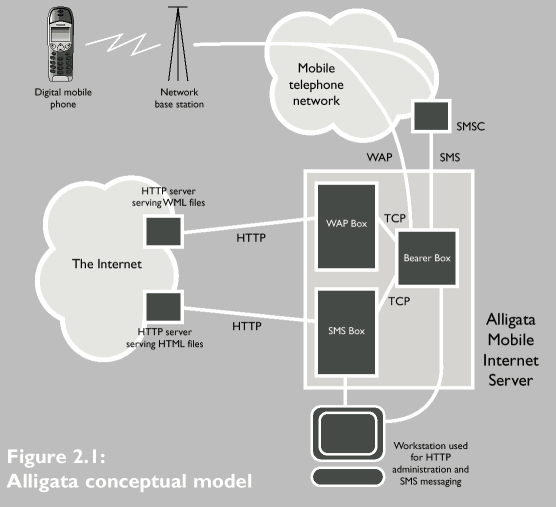
A signal sent by a mobile device is picked up by one of a network operator's base stations. It is then routed through the mobile network to the Alligata Server using User Datagram Protocol (UDP). If it is an SMS message, it is first sent to the network's SMS Centre (SMSC). The SMSC's main job is to hold pending SMS messages for recipients whose phones are turned off or otherwise inaccessible.
Once the Alligata Server has received a WAP data packet from a client and decompressed it, it uses Hypertext Transfer Protocol (HTTP) to retrieve data from the relevant content server on the Mobile Internet.
On receiving an SMS message, the Alligata Server scans it for keywords and parameters listed in its configuration file (see Section 13.1), then sends an automatic reply to the client device depending on which keyword and parameters it encountered. This reply can consist of static text, or it can be retrieved from a local file, a WAP site or a World Wide Web page.
The Alligata Server's reply to an SMS message is another SMS message. This means that, in principle, it has to be sent to the relevant network operator's SMSC in order to be routed to the recipient device (or stored if the recipient device is not accessible). Most network operators charge a fee for terrestrial access to their SMSCs, but the Alligata Server allows you to circumvent this if you own a GSM modem, or a mobile phone that includes a GSM modem such as the Nokia 7110 or 6210. The Alligata Server can use the modem to send SMS messages directly over the airwaves. This way, you will get charged the same rates as mobile phone users for sending SMS messages from your computer workstation. See Section 9.3.2 for details of how to send messages using a GSM modem.
3.3 Inside the Alligata Server
The Alligata Server is a collection of three programs: a Bearer Box, a WAP Box and an SMS Box. In fact, an implementation of the Alligata Server can include any number of WAP Boxes and SMS Boxes, all linked to a single Bearer Box.
All incoming messages pass through the Bearer Box. The Bearer Box performs preliminary operations on each message and forwards it on to a WAP or an SMS Box depending on whether it is a WAP or an SMS message.
A WAP Box implements the WAP protocol stack on incoming WAP messages (apart from Wireless Datagram Protocol (WDP), which is implemented by the Bearer Box). It decompresses the WAP data and forwards requests to Internet servers using HTTP (see the booklet Your Pocket Guide to the Mobile Internet for more details). It then handles the replies from the HTTP servers, compresses the replies, implements the Wireless Session Protocol (WSP) and Wireless Transaction Protocol (WTP) layers of the WAP protocol stack on them, and sends them on to the Bearer Box. The Bearer Box implements the WDP layer, and sends the replies to the client device.
An SMS Box scans incoming SMS messages for keywords listed in the Alligata Server configuration file. It carries out the function associated with the keyword - for example, retrieving a piece of text from a Web page - and sends a reply SMS message, via the Bearer Box, to the client device.
3.3.1 Program States
At any given time, the Alligata Server can be in one of four states:
Running. The Alligata Server accepts, processes and sends files and messages normally.
Suspended. The Alligata Server does not accept any new WAP requests or messages from SMSCs. The Bearer Box does not allow new WAP or SMS Boxes to connect to it. No messages or files are sent out.
Isolated. The Alligata Server does not accept any new WAP requests or messages from SMSCs. However, it continues processing messages already in its system, and accepts SMS messages sent via HTTP (see Section 13.2).
Shutdown. The Alligata Server performs the shutdown procedure. New WAP requests and SMS messages are refused. Requests already being processed are carried through. When all queues in the boxes have been processed, the Alligata Server closes down.
You can change the state of the Alligata Server using HTTP administration commands. See Section 8.2.2.
There follows a more detailed look at the components of the Alligata Server. You do not need to know this information to use the Alligata Server, but you may find it of interest.
3.3.2 Bearer Box
The Bearer Box is the interface between the mobile telephone network and the rest of the Alligata Server. It receives data from mobile phones via network bearer services or SMSCs.
On receiving a WAP data packet from a mobile device, the Bearer Box implements the WDP layer of the WAP protocol stack on it, and sends it on to a WAP Box. If a session is already running between the Alligata Server and the client device, then the message is sent to the same WAP Box as previous messages from the device. If, on the other hand, the message is the first to be received from that client in the current session, then it is sent to a WAP box at random. A basic system of load balancing is used to avoid bottlenecks forming in any single WAP Box. Load balancing works as follows: at regular intervals, each WAP Box sends a 'heartbeat' message (see Section 3.3.3) to the Bearer Box indicating its load - that is, how many sessions it is currently handling. If this load is significantly higher than the load of the least busy WAP box, then the Bearer Box stops sending requests from new clients to the busier WAP box. When the load of the busier WAP Box has fallen sufficiently, or the load of the other WAP Boxes has increased to near its own, the busier WAP Box starts to accept requests from new clients again.
Messages are distributed among the SMS Boxes in the same way as among as the WAP Boxes. That is, the Bearer Box sends all messages from a particular client to the same SMS Box; it assigns messages from new clients to an SMS Box at random; and it uses load balancing to prevent unnecessary congestion in any particular SMS Box.
Within the Alligata Server, the Bearer Box acts as a server to the WAP or SMS Boxes. Once running, it keeps a list of all the WAP and SMS Boxes connected to it. This list starts out empty, and is extended as boxes start up and announce their presence. The Bearer Box is in constant communication with the WAP and SMS Boxes via 'heartbeat' messages (see Section 3.3.3), and dynamically updates its list of connected WAP and SMS Boxes as new boxes connect and old ones disconnect.
As well as receiving incoming messages, the Bearer Box processes all outgoing messages from the Alligata Server's WAP and SMS Boxes, adapting each message to the bearer service of the client's network. In the case of WAP messages, it also implements the WDP layer of the WAP protocol stack.
Since all incoming and outgoing messages pass through a single Bearer Box, there is a risk of bottlenecks arising when traffic becomes very heavy. The Alligata Server is designed so that the Bearer Box does as little processing on each data packet as possible, thereby reducing this risk (particularly if there are several WAP and SMS Boxes running on different computers).
3.3.3 Communication Between the Boxes
Data is exchanged between the Bearer Box and the WAP and SMS Boxes via Transmission Control Protocol (TCP) stream. TCP is a protocol suited for use in wide area networks (such as the Internet), and its incorporation into the Alligata Server means that the Bearer Box, WAP Boxes and SMS Boxes can be run on separate computers, if required. The advantages of this set-up are clear: it means that, outside the Bearer Box, groups of packets can be processed simultaneously, and therefore the Alligata Server can process high volumes of messages very quickly.
If the TCP stream between the Bearer Box and a WAP or SMS Box fails for any reason, the Bearer Box notices this and removes the disconnected box from its list of available boxes. Any packets from phones that were routed to this box are then treated as packets from new clients, and redirected by the Bearer Box to an alternative WAP Box. When a WAP Box receives a message from a new client that it identifies as being from the middle of a session, it sends an error message to the client device.
A WAP or SMS Box can also go 'catatonic': its TCP stream to the Bearer Box is still running, but it is not responding to any messages. So that the Bearer Box knows when this has happened, WAP and SMS Boxes send 'heartbeat' packets at regular intervals, effectively telling the Bearer Box that they are running and functioning normally. If the Bearer Box stops receiving heartbeat messages from another box, it assumes there is a problem even though the TCP stream may still be running, and removes the box from its list. When the ailing box recovers and announces its presence, the Bearer Box reopens the connection.
3.3.4 WAP Box
A WAP Box receives data in WDP packets through its TCP connection with the Bearer Box. It implements the and WSP layers of the WAP protocol stack on the packets, and then decompresses them.
Each incoming WDP packet is handled by a single program thread. This thread creates and manages a WTP state machine and, where necessary, a WSP state machine for the packet. The same WTP machine and WSP machine handle all packets from a given client session.
If a packet arrives in a WAP Box while the WTP machine for which it is destined is still processing the previous packet, then the WAP Box sets up a queue specific to that WTP machine. This is preferable to creating a new thread for waiting WDP packets, as it reduces the risk of the WAP Box's thread table becoming full when traffic is very heavy.
Once the WTP and WSP layers of the WAP protocol stack have been implemented on the incoming message, the WAP Box converts it into an HTTP request, and sends it to the relevant server on the Mobile Internet.
On receiving an HTTP reply from the Mobile Internet server, the WAP Box compresses the reply, implements the WSP and WTP layers of the WAP protocol stack on it, and sends it to the Bearer Box along the TCP connection.
3.3.5 SMS Box
The design of an SMS Box is straightforward. An SMS Box receives SMS messages from the Bearer Box via its TCP connection, parses each message in order to extract keywords and parameters from it, and then executes a service according to which keyword the message contains. The keyword is the first word in the message; any other words are interpreted as parameters. See Section 13.1 for more information.
If the SMS service in question has a url variable defined in the configuration file (see Section 9.3.3), then the SMS Box sends an HTTP request to the appropriate URL, retrieves the data, pulls out the content between the prefix and the suffix strings as specified in the configuration file, formats this content as an SMS message or messages, and sends the SMS message(s) to the Bearer Box via the TCP stream. The Bearer Box sends the message back to the client device via an SMSC.
Other services the SMS Box can provide include sending a fixed text message or the content of a local file in response to a keyword. For more information, see Sections 9.3 and 13.1.
The SMS Box also listens for SMS messages arriving via HTTP from computer workstations. It converts these messages from HTTP into true SMS format, and sends them on to the Bearer Box to be conveyed to mobile devices. See Section 13.2 for details of how to send SMS messages from a computer workstation.
Chapter 4. 4 Installation from a Graphical User Interface
If your Linux or Solaris system includes a graphical user interface, the installation program automatically installs the Alligata Server using the graphical procedure described in this section.
To install the Alligata Server from a Linux/Solaris graphical user interface:
Place the Alligata Server CD-ROM in the CD-ROM drive.
If your version of Linux or Solaris automounts CD-ROMs, a file manager window will open, showing the contents of the directory into which the CD-ROM has been mounted. (In Linux this directory is usually /mnt/cdrom, in Solaris it is usually /cdrom/cdrom0.)
If you are running your Linux/Solaris session as root, you can continue by double-clicking the install icon in the file manager window. This will take you straight to step 8.
Open a terminal window.
In the terminal window, type
su
at the command prompt and press ENTER.
You will be prompted for the root password.
Type the password of the root user and press ENTER.
You will be returned to the command prompt.
At the command prompt, type
mount path_of_your_system's_CD-ROM_mount_point
(In Linux the path of the CD-ROM mount point is usually /mnt/cdrom, in Solaris it is usually /cdrom/cdrom0 or something similar.) For example:
mount /mnt/cdrom
Press ENTER.
If your version of Linux or Solaris automounts CD-ROMs, you can ignore this step.
Change directory to your system's CD-ROM mount point. For example, Linux users should type
cd /mnt/cdrom
and press ENTER.
Type
./install
and press ENTER.
Solaris users. The installation program requires Perl to be installed on your system. If Perl is not found (for example, if you are running the default Solaris 7 system), you will be prompted to install it:
Perl is not installed or is not in your command path. Do you want to install Perl now ? (y/N)
Type Y, ENTER to install Perl or N, ENTER to abort installation.
A dialog box opens containing information on the licences used by the Alligata Server package (see Figure 4.1).
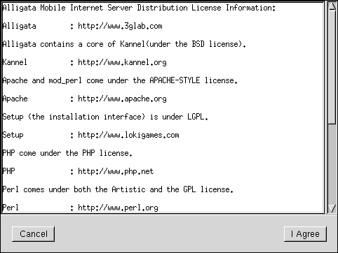
Figure 4.1: Licence dialog box
If you agree with the terms of the listed licence agreements, click 'I Agree'.
The main installation dialog box appears (see Figure 4.2).
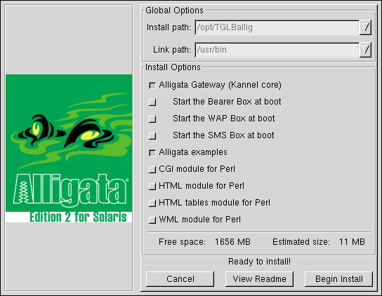
Figure 4.2: Main Alligata Server installation dialog box
Note: the Alligata Server installation program detects whether each item is already installed on your system. Items already installed do not appear in the installation dialog box. For example, if your computer already contains an installation of the Apache server, the option 'Apache Web server' will not appear in the dialog box.
In the dialog box, select the items you want to install. See Figure 4.3 for an explanation of the options in the installation dialog box.
Figure 4.3(a) Global Options
- Install path
Shows the directory into which the Alligata Server program files are installed. Defaults to /usr/share/alligata in Linux, and /opt/TGLBallig in Solaris. The install path cannot be changed.
- Binary directory
Shows the directory into which the Alligata Server's binary files are installed. Defaults to /usr/bin, and cannot be changed.
Figure 4.3(b) Installation Options
- Alligata Gateway (Kannel core)
Installs the Alligata Server on the current computer, including the Bearer Box, one WAP Box and one SMS Box. If you want to install extra WAP and SMS Boxes on other computers, see Section 6.
- Start the Bearer Box at boot
If selected, causes the Alligata Server's Bearer Box to be started automatically every time the computer is booted.
- Start the WAP Box at boot
If selected, causes the WAP Box to be started automatically every time the computer is booted.
- Start the SMS Box at boot
If selected, causes the SMS Box to be started automatically every time the computer is booted.
- Alligata example sites
Installs the Alligata Server example WAP sites. In Linux, these are installed into /home/httpd/alligata/wml. In Solaris 7, they are installed into /usr/local/apache/alligata/wml. In Solaris 8, they are installed into /etc/apache/alligata/wml.
Section 12 provides a guide to viewing, using and understanding the example sites.
- Apache Web server
Installs the Apache Web server. You will need Apache, or a similar HTTP server, to view the example sites.
- Development files for the Apache Web server (Linux only)
Installs the Apache development package. You will need this package if you plan to extend Apache, for example to write a new module.
If the computer already contains an installation of Apache, the Alligata Server installation program automatically updates the Apache configuration for WML and Wireless Bitmap (WBMP) file formats.
- Apache manuals (Linux only)
Installs the Apache manuals into the directory /home/httpd/html/manual. To view the index page, open the file index.html in a Web browser such as Netscape or Lynx.
- PHP language
Installs the PHP scripting language. PHP is used by two of the Alligata Server example WAP sites. It can be very useful for developing Web and WAP applications.
In the Solaris installation, this option includes the PHP IMAP module (see below).
- IMAP module for the PHP language (Linux only)
Installs the IMAP PHP module. This module is used in the example WAP site PAT for liaising with your e-mail server.
- Documentation for the PHP language (Linux only)
Installs documentation for the PHP language into the directory /home/httpd/html/manual/mod/mod_php3. To view the index page, open the file index.html in a Web browser such as Netscape or Lynx.
- CGI module for Perl
Installs the CGI Perl module, version 2.69. This module facilitates the output of Web files from Perl scripts. It is needed to view the Alligata Server's Perl example site. (The CGI modules supplied with most Linux distributions are too old and will not work with the example Perl site.)
- HTML module for Perl
Installs the HTML Perl module. This module is needed to view the Alligata Server's Perl example site.
- HTML tables module for Perl
Installs the HTML tables Perl module. This module is needed to view the Alligata Server's Perl example site.
- WML module for Perl
Installs the WML Perl module. This module is needed to view the Alligata Server's Perl example site.
Click .
The Alligata Server will be installed on your system. Installation progress information appears in the terminal window from which you launched the installation program.
When all the files have been copied to your system, the dialog box in Figure 4.4 is displayed.
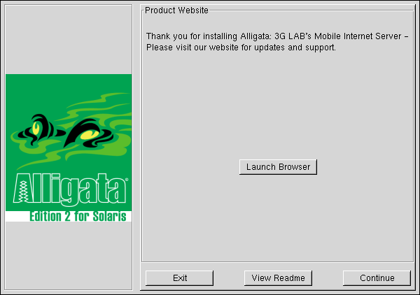
Figure 4.4: 'Thank You' dialog box
Click to go to the 3G LAB Web site, where you can receive information about Alligata Server updates and support.
Click to cancel the installation.
Click to view the Readme file.
Click to complete the installation.
If you clicked , the dialog box in Figure 4.5 will appear.
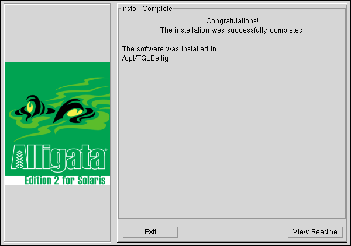
Figure 4.5: 'Install Complete' dialog box
Click to finish the installation, or to view the Readme file.
To start the Alligata Server, follow the instructions in Section 8.1.
Chapter 5. 5 Installation from the Command Line
If your Linux or Solaris system does not include a graphical user interface, the installation program will install the Alligata Server using the command line procedure described in this section.
To install the Alligata Server from the command line:
Place the Alligata Server CD-ROM in the CD-ROM drive.
At the command prompt, type
su
and press ENTER.
You will be prompted for the root password.
Type the password of the root user and press ENTER.
You will be prompted for the root password.
At the command prompt, type
mount path_of_your_system's_CD-ROM_mount_point
(In Linux the path of the CD-ROM mount point is usually /mnt/cdrom, in Solaris it is usually /cdrom/cdrom0 or something similar.) For example:
mount /mnt/cdrom
Press ENTER.
If your version of Linux or Solaris automounts CD-ROMs, you can ignore this step.
Change directory to your system's CD-ROM mount point. For example, Linux users should type
cd /mnt/cdrom
and press ENTER.
Type
./install
and press ENTER.
Solaris users. The installation program requires Perl to be installed on your system. If Perl is not found (for example, if you are running the default Solaris 7 system), you will be prompted to install it:
Perl is not installed or is not in your command path. Do you want to install Perl now ? (y/N)
Type Y, ENTER to install Perl or N, ENTER to abort installation.
Information on the licence agreements used by the Alligata Server package will be displayed on the screen, together with the question,
Do you agree with the licence? [Y/n]
If you agree, type Y, ENTER or just ENTER.
Information on the installation and binary paths appears on the screen. For example:
Install path set to: /usr/share/alligata Binary path set to: /usr/bin
Note: you cannot change the installation and binary paths.
You will be presented with the questions listed in Figure 5.1. In response to each question, type Y, ENTER for 'yes', N, Enter for 'no', or ?, ENTER to receive help.
Pressing just ENTER in response to a question selects the first (capitalised) option in the square brackets after the question. For example, if the square brackets look like this:
[N/y/?]
then pressing ENTER is equivalent to pressing N, ENTER.
Note: the Alligata Server installation program detects whether each item is already installed on your system. You will not be asked whether you want to install items that are already installed. For example, if your computer already contains an installation of the Apache server, the question 'Install Apache Web server?' will be omitted.
Figure 5.1 Command Line Installation Options
- Install the Alligata Gateway (Kannel core)? [Y/n/?]
Y installs the Alligata Server on the current computer, including the Bearer Box, one WAP Box and one SMS Box. If you want to install extra WAP and SMS Boxes on other computers, see Section 6.
- Start the Bearer Box at boot? [N/y/?]
Y causes the Alligata Server's Bearer Box to be started automatically every time the computer is booted.
- Start the WAP Box at boot [N/y/?]
Y causes the WAP Box to be started automatically every time the computer is booted.
- Start the SMS Box at boot [N/y/?]
Y causes the SMS Box on the current computer to be started automatically every time the computer is booted.
- Install the Alligata examples? [Y/n/?]
Y installs the Alligata Server example WAP sites. In Linux, these are installed into /home/httpd/alligata/wml. In Solaris 7, they are installed into /usr/local/apache/alligata/wml. In Solaris 8, they are installed into /etc/apache/alligata/wml.
Section 12 provides a guide to viewing, using and understanding the example sites.
- Install Apache Web server? [N/y/?]
Y installs the Apache Web server. You will need Apache to view the example sites.
- Install Development files for the Apache Web server? [N/y/?] (Linux only)
Y installs the Apache development package. You will need this package if you plan to extend Apache, for example to write a new module.
If the computer already contains an installation of Apache, the Alligata Server installation program updates the Apache configuration for WML and WBMP file formats.
- Install Apache manuals? [N/y/?] (Linux only)
Y installs the Apache manuals into the directory /home/httpd/html/manual. To view the index page, open the file index.html in a Web browser such as Netscape or Lynx.
- Install PHP language? [N/y/?]
Y installs the PHP scripting language. PHP is used by two of the Alligata Server example WAP sites. It can be very useful for developing Web and WAP applications.
In the Solaris installation, this option includes the PHP IMAP module (see below).
- Install IMAP module for the PHP language? [N/y/?] (Linux only)
Y installs the IMAP PHP module. This module is used in the example WAP site PAT for liaising with your e-mail server.
- Install Documentation for the PHP language? [N/y/?] (Linux only)
Y installs documentation for the PHP language into the directory /home/httpd/html/manual/mod/mod_php3. To view the index page, open the file index.html in a Web browser such as Netscape or Lynx.
- Install CGI module for Perl? [N/y/?]
Y installs the Common Gateway Interface (CGI) Perl module, version 2.69. This module facilitates the output of Web files from Perl scripts. It is needed to view the Alligata Server's Perl example site. (The CGI modules supplied with most Linux distributions are too old and will not work with the example Perl site.)
- Install HTML module for Perl? [N/y/?]
Y installs the HTML Perl module. This module is needed to view the Alligata Server's Perl example site.
- Install HTML tables modules for Perl? [N/y/?]
Y installs the HTML tables Perl module. This module is needed to view the Alligata Server's Perl example site.
- Install WML module for Perl? [N/y/?]
Y installs the WML Perl module. This module is needed to view the Alligata Server's Perl example site.
The following messages (or equivalents) will be displayed on the screen:
Installing to /usr/share/alligata xMb available, 5Mb will be installed Continue install? [Y/n]
Selecting Y installs the Alligata Server and any other selected items on your system.
Installation progress is displayed on the screen.
When installation is complete, the following messages will be displayed on the screen:
Thank you for installing the Alligata Server, 3G LAB's Mobile Internet Server! Please visit our Web site for updates and support. Would you like to launch a Web browser? [Y/n]
To visit the 3G LAB Web site, select Y.
If you select N, the following message will be displayed on the screen:
Installation complete.
To start the Alligata Server, follow the instructions in Section 8.1.
Chapter 6. 6 Installing Multiple WAP and SMS Boxes
The Alligata Server installation program installs a Bearer Box, a WAP Box and an SMS Box onto a personal computer running Linux or Solaris.
The following instructions assume you have already installed the Alligata Server on a personal computer running Linux or Solaris ('Computer A'). If you have not yet installed the Alligata Server, please follow the instructions in Section 4 for installation from a graphical user interface, or Section 5 for installation from the command line.
You can add any number of extra WAP and SMS Boxes to an installation of the Alligata Server.
To add a WAP Box to an installation of the Alligata Server:
Connect a computer running Linux or Solaris ('Computer B') to Computer A using TCP/IP.
Install a complete copy of the Alligata Server onto Computer B as described in Sections 4 and 5.
On Computer B, open the configuration file /etc/alligata.conf in a text editor such as vi or Emacs.
About the configuration file: the Alligata Server configuration is a list of variables divided into groups. Each group begins with the line
group = x
where x is a group identifier. A blank line signifies the end of a group. (Full instructions for configuring the Alligata Server are provided in Section 9.)
In the configuration group beginning with the line
group = wapbox
, change the value of the variable
bearerbox-host
to the IP address or URL of the computer hosting the Bearer Box (that is, computer A). For example:
bearerbox-host = 10.0.0.1
Repeat steps 1-4 on a new computer for each WAP Box you want to add.
To add an SMS Box to an installation of the Alligata Server:
Connect a computer running Linux or Solaris ('Computer C') to Computer A using TCP/IP.
Install a complete copy of the Alligata Server onto Computer C as described in Sections 4 and 5.
On Computer C, open the configuration file /etc/alligata.conf in a text editor such as vi or Emacs.
About the configuration file: the Alligata Server configuration is a list of variables divided into groups. Each group begins with the line where x is a group identifier. A blank line signifies the end of a group. (Full instructions for configuring the Alligata Server are provided in Section 9.)
group = x
In the configuration group beginning with the line
group = smsbox
, change the value of the variable bearerbox-host to the IP address or URL of the computer hosting the Bearer Box (that is, computer A). For example:
bearerbox-host = 10.0.0.1
Repeat steps 1-4 on a new computer for each SMS Box you want to add.
II. Part Two: Using the Alligata Server
Chapter 7. 7 Introduction to Part Two
Welcome to Part Two of the Alligata Server User Manual, Using the Alligata Server. This part of the user manual explains how to:
start, stop and administer the Alligata Server
change the Alligata Server's configuration settings
view the example WAP sites provided with the Alligata Server
create WAP sites using Wireless Markup Language (WML)
create dynamic WAP sites using the Perl scripting language
create dynamic WAP sites using the PHP scripting language
use the Alligata Server's SMS features to deliver World Wide Web and other content to mobile phones
use the Alligata Server to send SMS messages from a computer workstation
configure a mobile phone for a WAP service 'over the air' using the Alligata Server's SMS features
This part of the user manual assumes you have installed the Alligata Server successfully on a computer workstation running Linux or Solaris. If you have not yet installed the Alligata Server, please follow the installation instructions in Sections 4 to 6.
Chapter 8. 8 Running the Alligata Server
Note: to run an Alligata Server command line command, you must be logged in as root. Therefore, before using any of the command line commands in this section, change to root as follows:
At the command prompt, type su and press ENTER.
You will be prompted for the password of root.
Type the password of root and press ENTER.
You will be returned to the command prompt as root.
Once the Alligata Server is running, its user will change from root to that specified by the user variable in the Core group of the configuration file. By default, this user is alligata.
8.1 Starting the Alligata Server
Each box in the Alligata Server needs to be started separately. The Bearer Box must be started before any of the WAP or SMS Boxes. There are three methods of starting the Alligata Server.
To start the Alligata Server:
8.1.1 Method 1
If, when you installed the Alligata Server, you selected 'Start the Bearer Box at boot', 'Start the WAP Box at boot' or 'Start the SMS Box at boot', then the relevant box will start automatically each time you boot up the computer.
8.1.2 Method 2
Linux users
At the command prompt, type
/etc/rc.d/init.d/box start
where box is one of the strings bearerbox, wapbox or smsbox. Press ENTER.
The procedure to start the Bearer Box, WAP Box and SMS Box on a single Linux workstation is therefore as follows:
To start the Bearer Box, type
/etc/rc.d/init.d/bearerbox start
at the command prompt and press ENTER.
The Bearer Box will start up.
To start the WAP Box, type
/etc/rc.d/init.d/wapbox start
at the command prompt and press ENTER.
The WAP Box will start up.
To start the SMS Box, type
/etc/rc.d/init.d/smsbox start
at the command prompt and press ENTER.
The SMS Box will start up.
Solaris users
At the command prompt, type
/etc/init.d/ box start
where box is one of the strings bearerbox, wapbox or smsbox. Press ENTER.
The procedure to start the Bearer Box, WAP Box and SMS Box on a single Linux workstation is therefore as follows:
To start the Bearer Box, type
/etc/init.d/bearerbox start
at the command prompt and press ENTER.
The Bearer Box will start up.
To start the WAP Box, type
/etc/init.d/wapbox start
at the command prompt and press ENTER.
The WAP Box will start up.
To start the SMS Box, type
/etc/init.d/smsbox start
at the command prompt and press ENTER.
The SMS Box will start up.
8.1.3 Method 3
This method of starting the Alligata Server allows you to enter command line options that customise the way each box runs. Using this method, the procedure to start up the Bearer Box, WAP Box and SMS Box on a single workstation is as follows:
To start the Bearer Box, type
bearerbox
at the command prompt and press ENTER. You can use command line options to override some of the settings in the configuration file. See Command Line Options below.
The Bearer Box will start up.
To start the WAP Box, type
wapbox
at the command prompt and press ENTER. You can use command line options to override some of the settings in the configuration file. See Command Line Options below.
The WAP Box will start up.
To start the SMS Box, type
smsbox
at the command prompt and press ENTER. You can use command line options to override some of the settings in the configuration file. See Command Line Options below.
The SMS Box will start up.
For each box, you can use a different configuration file from the default file by including the path and name of the relevant file after the command. For example:
bearerbox /etc/alligata2.conf
Command Line Options
If you start up the Alligata Server using Method 3, you can include options in the command line you use to start up each box. The format for command line options is
box option value
For example:
bearerbox -v 2
The available command line options are shown in Figure 8.1.
Table 8-1. Figure 8.1: Alligata Server command line options
| -F file_name | Log file name. Does not override the log file name setting in the configuration file, but outputs to both files. |
| -V number_0-4 | Verbosity level for output to the log file specified with -F. 0 provides most detail, 4 least. The default value is 1. |
| -S | Suspended. Starts the Alligata Server in suspended state. See Section 3.3.1 for details. |
| -I | Isolated. Starts the Alligata Server in isolated state. See Section 3.3.1 for details. |
8.2 Administering the Alligata Server
8.2.1 Administering the Alligata Server from the Command Line
Each Alligata Server box understands four administration commands that can be entered from the Linux or Solaris command line. These commands must be in the following formats.
Linux users: . /etc/rc.d/init.d/box command
Solaris users: . /etc/init.d/box command
Replace box with one of the strings bearerbox, wapbox or smsbox. For example:
/etc/rc.d/init.d/wapbox restart
The available command line commands are shown in Figure 8.2.
Table 8-2. Figure 8.2: Alligata Server command line administration commands
| start | Starts the specified box. |
| restart | Shuts down the specified box, then immediately restarts it. |
| stop | Shuts down the specified box. |
| status | Outputs a summary of processes currently being run by the specified box. |
8.2.2 Administering the Alligata Server Using HTTP
You can use a set of HTTP commands to set the Alligata Server's program state (see Section 3.3.1) while it is running. You can also use the status command to retrieve information about the Alligata Server's current activity. Figure 8.3 lists the Alligata Server's HTTP administration commands.
To send the Alligata Server an HTTP administration command:
In the 'Location' box of a Web browser, type the command using the following syntax:
http://hostname:port/cgi-bin/command?password=password
http://localhost:13004/cgi-bin/suspend?password=PAPaya
The port number (13004 in the example) must be the same as that defined by the admin-port variable in the Core configuration group (see Section 9.1). The command must be one of the five HTTP administration commands listed in Figure 8.3. The password must be that defined by the admin-password variable in the Core configuration group. (Note that the status command requires no password.)
To save having to type a whole URL for each command, you can create an HTML form. Here is one for the shutdown command:
<form name="httpadmin" method="get" action="http://localhost:13004/cgi-bin/shutdown"> Enter Alligata Server administration password: <br> <input type="text" name="password" value=""> <input type="submit" value="Shut down the Alligata Server"> </form>
Table 8-3. Figure 8.3: Alligata Server HTTP administration commands
status Retrieves the following information about the Alligata Server's current activity: the program state; the total number of data packets queuing in the system; the total number of WAP Box and SMS Box connections. No password is required. suspend Sets the Alligata Server's state to 'suspended'. isolate Sets the Alligata Server's state to 'isolated'. resume Sets the Alligata Server's state to 'running', if it has been suspended or isolated. shutdown Sets the Alligata Server's state to 'shutdown'. The shutdown process, once begun, cannot be stopped - though the Alligata Server's status can still be queried. If a second shutdown command is sent, the Alligata Server will close down immediately, regardless of whether any packets are still held in queues.
8.2.3 Monitoring the Alligata Server Using less
You can monitor the Alligata Server's activity by opening the log files using the UNIX less command (for example, less /var/log/alligata/bearerbox.log). To watch a log file update while the Alligata Server is running, press SHIFT+F from within less.
Shutting down an Alligata Server box
There are two methods of shutting down an Alligata Server box.
To shut down an Alligata Server box:
8.3.1 Method 1
Linux users.
From the command line, type
/etc/rc.d/init.d/box stop
replacing box with the relevant box name, bearerbox, wapbox or smsbox. For example:
/etc/rc.d/init.d/wapbox stop
Solaris users.
From the command line, type
/etc/init.d/box stop
replacing box with the relevant box name, bearerbox, wapbox or smsbox. For example:
/etc/rc.d/init.d/wapbox stop
8.3.2 Method 2
Send the Alligata Server an HTTP shutdown administration command (see Section 8.2.2).
Note that this method can only be used to shut down the Bearer Box, not individual WAP and SMS Boxes.
Chapter 9. 9 Configuring the Alligata Server
The Alligata Server is installed with a default configuration that allows you to use it as a WAP gateway. If you want to customise its WAP features, or implement SMS messaging services, you need to make changes to the configuration file.
All the configuration data for the Alligata Server is held in a single file. By default this file is called alligata.conf and is held in the directory /etc. If you want to use a different configuration file, specify the path and file after the relevant command when you start up a box. (To do this, you must start the box using Method 3 - see Section 8.1.3.) For example:
bearerbox /etc/alligata2.conf
An example Alligata Server configuration file is shown in Figure 9.1.
Figure 9.1: Example Alligata Server configuration:
# Example Alligata Server configuration group = core user = alligata max-threads = 99 admin-port = 13004 wapbox-port = 13002 smsbox-port = 13005 admin-password = bar wdp-interface-name = * log-file = /alligata/admin/bearer.log log-level = 0 box-deny-ip = *.*.*.* box-allow-ip = 127.0.0.1 admin-deny-ip = 10.0.0.2 admin-allow-ip = *.*.*.* unified-prefix = 0044,0 group = wapbox bearerbox-host = localhost log-file = /alligata/admin/wapbox.log log-level = 0 group = smsbox bearerbox-host = localhost sendsms-port = 13013 global-sender = 123 log-file = /alligata/admin/smsbox.log log-level = 0 group = smsc smsc = at modemtype = wavecom device = /dev/ttyS2 group = sms-service keyword = proverb aliases = Proverb;PROVERB;potd;Potd;POTD url = http://www.awebsite.net/potd.html prefix = <!--beginprov--> suffix = <!--endprov--> split-chars = ;:. split-suffix = -cont- header = "Today's proverb -- " max-messages = 10 group = sms-service keyword = ota # In one line! url = http://localhost:13013/cgi-bin/sendota? username=otauser&password=foo&phonenumber=%p group = otaconfig location = http://www.asite.net service = Company Home ipaddress = 10.0.0.5 phonenumber = 44998123456 bearer = data calltype = analogue connection = cont pppsecurity = off authentication = normal login = phoneuser secret = barfoo group = sendsms-user username = otauser password = foo user-deny-ip = 10.0.0.2 user-allow-ip = *.*.*.* max-messages = 2 concatenation = 1 group = sms-service keyword = ota # In one line! url = http://localhost:13013/cgi-bin/sendota? username=otauser&password=foo&phonenumber=%p group = sms-service keyword = default text = Sorry, the Alligata Server didn't understand your message. group = sendsms-user username = tester password = foobar max-messages = 10 split-chars = .;, split-suffix = -cont.- header = "Msg from tester -- " password = foo user-deny-ip = 10.0.0.2 user-allow-ip = *.*.*.* max-messages = 2 concatenation = 1
The configuration file is a list of variables used by the Alligata Server, divided into groups. Each group controls a different area of the Alligata Server's functionality. The configuration file is a plain text file, so you can edit it in any text editor.
When editing the configuration file, note the following points:
Groups must be separated by one or more blank lines.
Each group must begin with the line
group = identifier
where identifier is one of the group identifiers listed in Figure 9.2.
The format of each variable definition is
variable_name = value
Quotation marks around the value are optional. Therefore,
log-file = /tmp/bearer.log
is equivalent to
log-file = "/tmp/bearer.log"
However, quotation marks are required if the value begins or ends with a space, or if it contains special characters.
Within quotation marks, standard C escape character syntax operates:
Within a group, each variable definition must be followed by a single carriage return.
A hash # at the start of a line indicates a comment. The Alligata Server will ignore this line.
The Alligata Server reads the configuration file when it is started up. If you make changes to the configuration file while it is running, then you must restart the Alligata Server before they will be implemented.
A summary of the characteristics of each configuration group is shown in Figure 9.2.
Table 9-2. Figure 9.2: Summary of Alligata Server configuration groups
| Group | Required? | Multiple groups allowed? | Identifier in configuration file (group = ...) | Function |
|---|---|---|---|---|
| Core | Yes | No | core | Configures the Bearer Box. |
| WAP Box | No | No | wapbox | Configures the WAP Box. |
| SMS Box | No | No | smsbox | Configures the SMS Box. |
| SMSC | No | Yes | smsc | Configures the connection to an SMSC. |
| SMS Service | No | Yes | sms-service | Configures an SMS keyword service. |
| Send SMS User | No | Yes | sendsms-user | Configures a user account for sending SMS messages from a PC workstation via HTTP. |
| OTA | No | No | otaconfig | Provides settings for over-the-air (OTA) configuration of client devices. |
The rest of this section consists of a full list of all the variables that can be used in the Alligata Server configuration file. Variables are arranged by group.
9.1 Core Configuration Variables (Core group)
The Core group provides general configuration information for the Alligata Server. This information is used by the Bearer Box.
- group = core
Group. Introduces the Core group. (Required.)
- user = user_name
The user name under which the Alligata Server is run. The Alligata Server automatically switches to this user name after it has started. (You must be logged in as root to start the Alligata Server manually. See Section 8 for instructions on starting the Alligata Server.)
Setting user to root is strongly discouraged, as it could compromise the security of the system.
Example:
user = alligata
- admin-port = port_number
Administration Port. Gives the port number on which the Bearer Box listens to HTTP administration commands. It can be any value between 1024 and 65535. (It may be under 1024 if you are running the Alligata Server as a root process, but it is not recommended that you do this.) It is not the same as the HTTP port of the local World Wide Web server. (Required.)
Example:
admin-port = 13004
- admin-password = password
Administration Password. Defines the password for HTTP administration commands (except the status command, which does not require a password). See Section 8.2.2 for HTTP administration instructions. (Required.)
Example:
admin-password = PAPaya
- smsbox-port = port_number
SMS Box Port. Defines the port number to which SMS Boxes connect. It can be any value between 1024 and 65535. (It may be under 1024 if the user variable is set to root, but this is not advised.)
This variable is required if the Alligata Server is to handle SMS traffic. Example:
smsbox-port = 13005
- wapbox-port = port_number
WAP Box Port. Defines the port number to which WAP Boxes connect. It can be any value between 1024 and 65535. (It may be under 1024 if the user variable is set to root, but this is not advised.)
This variable is required if the Alligata Server is to handle WAP traffic. Example:
wapbox-port = 13002
- wdp-interface-name = IP_address
If the Alligata Server's host machine has multiple network cards, specifies the IP address of the card from which User Datagram Protocol (UDP) WAP packets are accepted. If set to 0.0.0.0, accepts packets from any IP address.
Example:
wdp-interface-name = 10.0.0.3
- log-file = file_name
Log File. Specifies a file to which to output a log report of the Bearer Box's activity. If the specified file already exists, new output will be added to the end of the file.
If a log file is also defined in the command line when the Bearer Box is started up, then the log report will be output to both files (as well as to the standard output). See Section 8.1.3 for command line options.
If log-file is not set in the configuration file, it defaults to /var/log/alligata/bearerbox.log.
Example:
log-file = /alliglog/bearer.log
- log-level = number_0-4
Log Level. Sets the level of information to be recorded in the log file. Settings are as follows (with 0 providing the most detail and 4 the least):
0 Debug 1 Information 2 Warning 3 Error 4 Panic If log-level is not defined in the configuration file, it defaults to a value of 1.
Example:
log-level = 0
- box-deny-ip = List_of_IP_addresses , box-allow-ip = List_of_IP_addresses
Denied and allowed Box IP List. These variables list the IP addresses of WAP or SMS Boxes to which the Bearer Box may, or may not, forward packets. These variables allow you to prevent third parties from intercepting TCP packets as they leave the Bearer Box.
Addresses in the Denied and Allowed Box IP Lists are separated by semicolons. An asterisk * can be used as a wildcard in place of any single group of digits, so *.*.*.* matches any IP address.
Examples:
box-deny-ip = *.*.*.*
box-allow-ip = 10.0.0.6;10.0.0.7
- admin-deny-ip = List_of_IP_addresses , admin-allow-ip = List_of_IP_addresses
Administration Denied and Allowed IP Lists. These variables list IP addresses to be denied and allowed HTTP administration access to the Alligata Server. Addresses are formatted in the same way as in box-deny-ip and box-allow-ip.
Examples:
admin-deny-ip = *.*.*.*
admin-allow-ip = 10.0.0.6;10.0.0.7
- unified-prefix = List_of_telephone_code_prefixes
Unified Prefix. Lists substitutions for telephone code prefixes in SMS messages. Substitutions are applied to the 'sender' and 'recipient' fields in incoming and outgoing SMS messages respectively, and ensure that all equivalent numbers are formatted consistently for SMSCs.
The format for each substitution is r,p1,p2... where r is the replacement prefix, and p1, p2, etc. are the prefixes to be replaced.
You can define any number of substitutions in the configuration file by separating each definition with a semicolon ;.
Example:
unified-prefix = 0044, 0; 00555, 05, 050
- white-list = URL
White List. Links to a file listing telephone numbers of approved senders of SMS messages to the Alligata Server. SMS messages from numbers not in this list will be automatically discarded.
The white list file should contain telephone numbers separated by carriage returns.
Note: only the last nine digits are read, so it is theoretically possible for unauthorised senders with numbers nearly identical to those in the white list to gain access to the Alligata Server. The likelihood of this occurring is, however, minimal.
If the configuration file contains a white-list, it should not contain a black-list.
Example:
white-list = http://www.awebsite.net/alligata/white.htm
- black-list = URL
Black List. Links to a file listing telephone numbers of prohibited senders of SMS messages to the Alligata Server. SMS messages from numbers on this list are automatically discarded.
The black list file should contain telephone numbers separated by carriage returns.
As with the white list, only the last nine digits of the number are read by the Alligata Server.
If the configuration file contains a black-list, it should not contain a white-list.
Example:
black-list = http://www.awebsite.net/alligata/black.htm
- http-proxy-host = IP_address/URL
HTTP Proxy Host. Identifies a proxy server to be used for HTTP requests.
Example:
http-proxy-host = 10.0.0.8
- http-proxy-port = port_number
HTTP Proxy Port. Identifies the port on the proxy server to which the Alligata Server connects.
Example:
http-proxy-port = 13005
- http-proxy-exceptions = list_of_IP_addresses/URLs
HTTP Proxy Exceptions. Lists Internet addresses to be reached directly rather than via the proxy server (for example, computers on a local network).
Multiple values should be separated by spaces. Example:
http-proxy-exceptions = 10.0.0.3 10.0.0.4
- access-log = file_name
Access Log File. Specifies a file to which to output a log report of SMS messages processed by the Bearer Box.
Example:
access-log = bearerbox.access
9.2 WAP Configuration Variables (WAP Box group)
The WAP Box group provides the configuration for the WAP Box or Boxes. There cannot be more than one WAP Box group in the main configuration file. If you have installed several WAP Boxes on different computers (see Section 6), each WAP Box should use a separate configuration file.
If you are using the Alligata Server for WAP services, remember also to set the wapbox-port variable in the Core group (see Section 9.1).
If you are not using the Alligata Server for WAP services, then no WAP Box group is necessary.
- group = wapbox
Group. Introduces the Wap box group. (Required.)
- bearerbox-host = IP_address/URL
Bearer Box Host. Identifies the computer hosting the Bearer Box. (Required.)
Examples:
bearerbox-host = localhost
bearerbox-host = 100.100.100.100
bearerbox-host = acomputer.asite.net
- log-file = file_name
Log File. Specifies a file to which to output a log report of the WAP Box's activity. If the specified file already exists, new output is added to the end of it.
If a log file is also defined in the command line when the WAP Box is started up (see Section 8.1.3), then the log report will be output to both files.
If log-file is not set in the configuration file, it defaults to /var/log/alligata/wapbox.log.
Example:
log-file = /alliglog/wap.log
- log-level = number_0-4
Log Level. Sets the level of information to be recorded in the log file. Settings are as follows (with 0 providing the most detail and 4 the least):
0 Debug 1 Information 2 Warning 3 Error 4 Panic If log-level is not defined in the configuration file, it defaults to a value of 1.
Example:
log-level = 0
- timer-freq = value_in_seconds
Timer Frequency. If not set in the configuration file, defaults to a value of 1.
Example:
timer-freq = 3
- map-url = url#1 url#2
URL Mapping. On incoming URL requests, replaces url#1 with url#2. Asterisks can be used as wildcards to right-truncate either or both of the URLs.
Example:
map-url = xlwa/* http://www.extremely_longwinded _wapsite_address.com/*
This example enables a mobile device user to gain access to the URL http://www.extremely_longwinded_wapsite_address.com/contacts.wml simply by keying xlwa/contacts.wml.
Note: only one map-url is allowed in the configuration. If you need to map more than one URL, use map-url-0, etc. together with map-url-max.
- map-url-max = number
URL Mapping Maximum. Sets the maximum number of URL mappings to be defined in the configuration file.
If no maximum is specified, the Alligata Server allows a default maximum of ten mappings, numbered from 0 to 9 (see map-url-0, map-url-1, etc.).
Example:
map-url-max = 8
- map-url-0 = url#1 url#2 , map-url-1 = url#1 url#2 , etc.
Multiple URL Mappings. Define multiple URL mappings, unlike map-url, which can define only one mapping. Further URL mappings would be defined by the variables map-url-2, map-url-3 and so on, up to the maximum specified in map-url-max.
Formatting syntax is as for map-url.
Examples:
map-url-0 = xlwa/* http://www.extremely_longwinded_wapsite_address.com/*
map-url-1 = olwa/* http://www.outrageously_longwinded_wapsite_address.com/*
- device-home = url
Device Home. For Openwave's UP.Browser, defines the client's WML home deck. The actual URL supplied by the Openwave microbrowser is DEVICE:home. Both parts of the variable definition are implicitly right-truncated.
Thus,
device-home = http://www.devicehome.com/
is equivalent to
is equivalent to
Example:
device-home = http://www.devicehome.com/
9.3 SMS Configuration Variables (SMS Box, SMSC, SMS Service and Send SMS User groups)
9.3.1 SMS Box group
The SMS Box group provides the configuration for the SMS Box. There cannot be more than one SMS Box group in the main configuration file. If you have installed several SMS Boxes on different computers (see Section 6), each SMS Box should use a separate configuration file.
If you are using the Alligata Server for SMS messaging, remember also to set the smsbox-port variable in the Core group (see Section 9.1).
If you are not using the Alligata Server for SMS messaging, then no SMS Box group is necessary.
- group = smsbox
Group. Introduces the SMS Box group. (Required.)
- bearerbox-host = IP_address/URL
Bearer Box Host. Identifies the computer hosting the Bearer Box. (Required.)
Examples:
bearerbox-host = localhost
bearerbox-host = 10.0.0.1
bearerbox-host = acomputer.asite.net
- sendsms-port = port_number
Send SMS Port. Specifies the port via which SMS messages sent from a workstation by HTTP are received (see Section 9.3.4).
The port number can be any value between 1024 and 65535. (It may be under 1024 if the user variable in the Core configuration group is set to root, but this is not advised.)
Example:
sendsms-port = 13001
- telephone_number
Global Sender Number. Specifies the number shown as the sender's telephone number in outgoing SMS messages.
Note that most SMSCs will automatically replace this number with their own.
Example:
global-sender = 44998123456
- log-file = file_name
Log File. Specifies a file to which to output a log report of the SMS Box's activity. If the specified file already exists, new output will be added to the end of it.
If a log file is also defined in the command line when the SMS Box is started up, then the log report will be output to both files.
If log-file is not set in the configuration file, it defaults to /var/log/alligata/smsbox.log.
Example:
log-file = /alliglog/sms.log
- log-level = number_0-4
Log Level. Sets the level of information to be recorded in the log file. Settings are as follows (with 0 providing the most detail and 4 the least):
0 Debug 1 Information 2 Warning 3 Error 4 Panic If log-level is not defined in the configuration file, it defaults to a value of 1.
Example:
log-level = 0
- access-log = file_name
Access Log File. Specifies a file to which to output a log report of SMS messages processed by the SMS Box.
Example:
access-log = smsbox.access
9.3.2 SMSC group
For each SMSC with which the Alligata Server is in communication, you must configure an SMSC group. If you intend to use the Alligata Server for managing SMS messages, remember also to set the smsbox-port variable in the Core group (see Section 9.1).
Which variables you need to include in an SMSC group depends on the protocol used by the relevant SMSC. Figure 9.3 provides a list of which protocols support which variables. For full details of each protocol, please consult the documentation for the relevant SMSC.
AT is the protocol that the Alligata Server uses to send and receive SMS messages via a GSM wireless modem using AT commands. Using a GSM modem circumvents the need for a subscription to an SMSC. Certain mobile phones that incorporate a GSM modem can also be linked to a computer workstation and used to send and receive SMS messages in the same way as a modem.
Modems supported by the Alligata Server include the Wavecom WM02 and the Nokia Premicell. Phones that can be used as modems include the Nokia 7110.
If you do not want to use the Alligata Server's SMS features, you do not need any SMSC groups in your configuration file.
Table 9-3. Figure 9.3: SMSC group protocol-specific variables
| SMSC protocol | Value of smsc variable | Variables. Those in parentheses are optional. |
|---|---|---|
| CIMD | cimd | host, port, smsc-username, smsc-password |
| CIMD2 | cimd2 | host, port, smsc-username, smsc-password, (keepalive) |
| EMI | emi | phone, device, smsc-username, smsc-password |
| EMI IP | emi_ip | host, port, smsc-username, smsc-password, connect-allow-ip, (receive-port), (our-port) |
| SMPP IP | smpp | host, port, smsc-password, system-id, system-type, address-range, (receive-port) |
| SEMA X.28 | sema | device, smsc-nua, home-nua, (wait-report) |
| OIS | ois | host, port, receive-port, (ois-debug-level) |
| AT | at | device, modemtype, (pin) |
- group = smsc
Group. Introduces the SMSC group. (Required.)
- smsc = smsc_type
SMSC Type. Identifies the SMSC type. Currently available types are cimd, cimd2, emi, emi_ip, smpp, sema, at and ois. See Figure 9.3. (Required.)
Example:
smsc = emi
- smsc-id = string
SMSC Identifier. Provides a name by which the SMSC can be referred to elsewhere. This name can be used to associate the SMSC with particular SMS services and users, via the accepted-smsc, forced-smsc and default-smsc variables in the SMS Service and Send SMS User groups (see Sections 9.3.3 and 9.3.4).
The value of smsc-id may contain any alphanumeric characters, and is case-insensitive. Example:
smsc-id = smsc1
- denied-prefix = list_of_telephone_code_prefixes
Denied Telephone Prefix List. Lists prefixes of telephone numbers to which messages are not to be sent via this SMSC.
Numbers in the list are separated by semicolons ;.
The denied-prefix variable may be needed because some SMSCs do not allow messages to be sent to users on different telephone networks to their own. denied-prefix and preferred-prefix can also be useful to direct calls to the cheapest SMSC according to their destination code.
Example:
denied-prefix = 0898;0999
- preferred-prefix = list_of_telephone_code_prefixes
Preferred Telephone Prefix List. Lists prefixes of telephone numbers that should, if possible, be sent messages via this SMSC.
Numbers in the list are separated by semicolons ;.
It is possible for a telephone code prefix to be listed as preferred in more than one SMSC group. Where this is the case, the Alligata Server chooses one of these SMSC groups at random.
Where a telephone number's prefix is not listed as preferred in any SMSC group, the Alligata Server chooses a group at random from all available SMSC groups. Example:
preferred-prefix = 01487;01223
- host = IP_address/host_name
Examples:
host = 10.0.0.20
host = acomputer.acompany.net
- port = port_number
SMSC Host Port. Identifies the port number on the SMSC host machine used for communication. (Required.)
Example:
port = 13004
- our-port = port_number
Local Port. Identifies the port on the Alligata Server's host machine used for communication with the SMSC. Currently only the EMI IP protocol supports this.
Example:
our-port = 13005
- receive-port = port_number
Receive Port. Used with protocols that accept different send and receive ports, namely EMI IP, SMPP IP and OIS.
Example:
receive-port = 13006
- smsc-username = user_name
SMSC User Name. The Alligata Server's account user name on the SMSC's host machine.
Example:
smsc-username = ally
- smsc-password = password
SMSC Password. The Alligata Server's account password on the SMSC's host machine.
Example:
smsc-password = PINEapple
- device = device_name
System Device. When the Alligata Server is used with a GSM modem or the EMI or X.28 protocols, this identifies the device associated with the modem.
Example:
device = /dev/ttyS0
- connect-allow-ip = list_of_IP_addresses
Allowed IP Connections. Specifies IP addresses of SMSCs to be allowed to connect to the Alligata Server. Used by EMI IP.
Example:
connect-allow-ip = 10.0.0.20 10.0.0.21
- smsc_nua = X.121_address
SMSC address using X.121 protocol. Used by SEMA X.28.
Example:
smsc_nua = 000001220900
- home_nua = X.121_address
Radio PAD (Product Assembler/Disassembler) address using X.121 protocol. Used by SEMA X.28.
Example:
home_nua = 000001220900
- wait_report = digit_(0_or_1)
Wait Report. Used by SEMA X.28.
Example:
wait_report = 1
- phone = telephone_number
The SMSC's telephone number. Used only by EMI.
Example:
phone = 44999123456
- keepalive = number
The frequency of 'alive' messages in seconds. Used only by CIMD2.
- system_id = string
System ID. Used only by SMPP IP.
- system_type = string
System Type. Used only by SMPP IP.
- address_range = range
Address range. Used only by SMPP IP.
- modemtype = string
The type of modem being used to send SMS messages by the AT protocol. Modems currently supported are as follows:
Table 9-4. Currently supported modems
Modem modemtype value Wavecom WM02 wavecom Nokia Premicell premicell Siemens M20T siemens Siemens TC35 siemens-tc35 Phone with GSM modem nokiaphone (The Nokia Premicell does not support user data headers (UDHs), so cannot be used for over-the-air configuration messages.)
Used only by AT.
Example:
modemtype = wavecom
- pin = number
Personal Identification Number. An optional variable used only by AT. Use this variable if the SIM card inserted in your GSM modem requires a PIN for activation.
9.3.3 SMS Service Group
An SMS Service group defines an action to be performed by the SMS Box in response to a keyword and parameters in incoming SMS messages.
If you are using the Alligata Server for SMS messaging, remember to include an SMS Box group and at least one SMSC group in the configuration. You also need to set the smsbox-port variable in the Core group (see Section 9.1).
You can include as many SMS Service groups in the configuration as you like. Each group defines a single SMS service.
For instructions on how to implement SMS services, see Section 13.
- group = sms-service
Group. Introduces the SMS Service group. (Required.)
- keyword = word
Service Keyword. Defines the keyword that triggers the service. (Required.)
The keyword can only be a single word, without spaces, and must always be the first word in incoming messages.
keyword is case-sensitive. For example, frog, Frog and FROG are treated as different keywords.
If keyword has the value default, then the SMS Service will be applied to all incoming messages that do not contain recognised keywords.
Example:
keyword = football
- aliases = word#1;word#2, etc.
Service Keyword Aliases. Defines alternative keywords that will trigger the service. Multiple aliases must be separated by semicolons ;. Each alias must be a single keyword, containing no spaces.
Example:
aliases = Football;FOOTBALL
- url = url
Retrieval URL. Specifies a URL from which to fetch data.
The URL can include parameters that are extracted from the incoming SMS message. These parameters are expanded by the SMS Box before the request is sent to the World Wide Web.
Possible parameters are as follows:
Table 9-5. Possible parameters in the URL template
%s The next word from the incoming SMS message, starting with the second word (since the first word is the keyword). Characters that can be ambiguous in URLs are converted into hexadecimal ASCII codes, for example + is converted into %2B. After each %s, the URL parser moves on to the next word in the message. %S As %s, but * is converted to ~ (tilde). This can be useful for users whose mobile phones do not allow ~ to be entered. In addition, potentially ambiguous characters are not encoded. %r All the remaining words in the message. For example, if the message is 'foo bar foobar baz', and bar has already been parsed by a %s, then %r denotes foobar baz (foo, of course, being the keyword). %a All words in the incoming SMS message, including the first word. %t The time the message was sent, formatted as YYYY-MM-DD[space]HH:MM, for example 2000-07-28 15:56. %p The telephone number of the recipient of the SMS message. %P The telephone number of the sender of the SMS message. %q As %p, except that a leading 00 is replaced with +. %Q As %P, except that a leading 00 is replaced with +. These parameters can also be used with the file and text variables. See Section 13.1 for examples of how parameters can be used.
If an SMS Service group contains a url variable, it cannot also contain a file or a text (see below). There can only be one url in an SMS Service group.
url can be used in conjunction with prefix and suffix to retrieve a section of a Web page.
Example:
url = http://www.awebsite.net/cgi/salary?user=%s&password=%s&employee=%r
- file = file_name
Retrieval File. Specifies a file on a local disk from which to fetch data.
The whole of the file is retrieved, except for the last character (usually a line feed).
If an SMS Service group contains a file, it cannot also contain a url or a text. There can only be one file in an SMS Service group.
file supports all the parameters listed under url.
Examples:
file = /replies/areply.txt
file = /info/%s
- text = character_string
Reply Text. Specifies a static text message to be sent to the client.
If an SMS Service group contains a text, it cannot also contain a url or a file. There can only be one text in an SMS Service group.
text supports all the parameters listed under url.
Examples:
text = All is well over here.
text = You wrote: %r.
- prefix = character_string , suffix = character_string
Retrieval Prefix and Suffix. Used in conjunction with url. The Alligata Server retrieves all text between (but not including) the prefix and the suffix in the target Web page. Tags are stripped out.
If the target page contains more than one occurrence of the prefix or suffix, then the Alligata Server retrieves everything between the first occurrence of the prefix and the first succeeding occurrence of the suffix.
Examples:
prefix = <!--begin today's weather-->
<!--end today's weather-->
- faked-sender = telephone_number
Faked Sender Number. Specifies the number shown as the sender's telephone number in outgoing SMS messages for this service.
faked-sender will override any sender numbers specified elsewhere (for example, the global-sender variable in an SMS Box group).
Note that most SMSCs will replace the faked-sender number with their own.
Example:
faked-sender = 44998123456
- max-messages = number
Maximum Reply Messages. Specifies the maximum number of individual SMS messages allowed in a single reply.
If max-messages is not set in the configuration file, it defaults to a value of 1.
If max-messages is set to 0, then no replies will be sent, other than error messages.
Example:
max-messages = 8
- split-chars = list_of_characters
Message Split Characters. Specifies characters that can be used to split a long outgoing message into several shorter ones.
The maximum length of a single SMS message will vary depending on whether it uses a 7-bit or an 8-bit format, and whether it has a user data header (UDH). A 7-bit message usually has a maximum length of 160 characters, an 8-bit message a maximum length of 140 characters.
Messages over the maximum length for a single message are split as specified in the configuration file. Where split-chars is not specified, the Alligata Server uses any character to split the message.
The Alligata Server only splits messages where necessary. For example, if the semicolon ; is specified as a split character, then a message of 200 characters containing six semicolons will be split into just two shorter messages, not seven.
Example:
split-chars = ;:.
- split-suffix = character_string
Message Split Suffix. Where a long message is split into two or more shorter ones, specifies a string to appear at the end of each message (except the last).
Example:
split-suffix = -cont.-
- omit-empty = a numeric value
Omit Empty Messages. If set to a number other than 0, stops messages containing no data being sent to the user.
Example:
omit-empty = 1
- header = character_string
Reply Header. Specifies a string to appear at the beginning of outgoing messages. In the case of split messages, the string appears on every message.
Example:
header = Today's weather...
- footer = character_string
Reply Footer. Specifies a string to appear at the end of outgoing messages. In the case of split messages, the string appears on every message.
Example:
footer = -- sent by the Alligata Server --
- accepted-smsc = list_of_smsc_identifiers
Accepted SMSC identifiers. Only messages from SMSCs with these identifiers (see smsc-id in Section 9.3.2) are allowed to use this service.
Multiple values should be separated by semicolons ;.
Example:
accepted-smsc = smsc1;smsc2
- concatenation = 0_or_1
If set to 1, allows concatenation of multiple SMS messages in the client device.
Example:
concatenation = 1
9.3.4 Send SMS User Group
The Alligata Server allows you to send SMS messages from a computer workstation using HTTP (see Section 13.2). To do this, you must configure at least one Send SMS user account. Each user account is defined in a separate Send SMS User group.
- group = sendsms-user
Group. Introduces the Send SMS User group. (Required.)
- username = string
Send SMS User Name. Specifies the account user name. (Required.)
Example:
username = colin
- password = string
Send SMS Password. Specifies the account password. (Required.)
Example:
password = AVOcado
- user-deny-ip = List_of_IP_addresses
Denied IP Addresses. Lists IP addresses from which SMS messages may not be sent using HTTP. Addresses in the list are separated by semicolons. An asterisk * can be used as a wildcard in place of any single group of digits. For example, *.*.*.* matches any IP address.
Example:
user-deny-ip = 0.0.0.0;10.0.0.6
- user-allow-ip = List_of_IP_addresses
Allowed IP Addresses. Lists IP addresses from which SMS messages may be sent using HTTP.
Addresses are formatted in the same way as in user-deny-ip.
user-allow-ip = 0.0.0.0;10.0.0.7
- faked-sender = telephone_number
Faked Sender Number. Specifies the telephone number shown as the sender's on client devices.
Note that most SMSCs will replace this number with their own.
faked-sender will override any sender numbers specified elsewhere (for example, the global-sender variable in the SMS Box group).
Example:
faked-sender = 44998123456
- max-messages = number
Maximum Messages. Specifies the maximum number of individual SMS messages into which a long message can be split.
If max-messages is not set in the configuration file, it defaults to a value of 1.
If max-messages is set to 0, then no messages will be sent.
Example:
max-messages = 8
- split-chars = list_of_characters
Message Split Characters. Specifies characters that can be used to split a long message into several shorter ones.
The maximum length of a message is usually 140 or 160 characters, depending on the SMSC's protocol. Messages over this length are split as specified in max-messages and split-chars. If split-chars is not set, any character is used to split the message.
The Alligata Server will only split messages where necessary. For example, if the semicolon ; is specified as a split character, then a message of 200 characters containing six semicolons will be split into just two shorter messages, not seven.
Example:
split-chars = .,':
- split-suffix = character_string
Message Split Suffix. Where a long message is split into two or more shorter ones, specifies a string to appear at the end of each message (except the last).
Example:
split-suffix = -cont.-
- omit-empty = number
Omit Empty Messages. If set to a number other than 0, stops messages containing no data being sent to the user.
Example:
omit-empty = 1
- header = character_string
message Header. Specifies a string to appear at the beginning of outgoing messages. In the case of split messages, the string appears on every message.
Example:
header = Message from your manager
- footer = character_string
message Footer. Specifies a string to appear at the end of outgoing messages. In the case of split messages, the string appears on every message.
Example:
footer = -- Sent by Alligata Server --
- forced-smsc = smsc_identifier
Forced SMSC Identifier. Forces SMS messages to be sent via the specified SMSC. See smsc-id in Section 9.3.2.
Example:
forced-smsc = smsc1;smsc2
- default-smsc = smsc_identifier
Default SMSC Identifier. Specifies an SMSC via which messages are to be sent, unless an alternative SMSC is specified in the smsc parameter in the message itself (see Section 13.2.2).
Example:
default-smsc = smsc1
- concatenation = 0_or_1
If set to 1, allows concatenation of multiple SMS messages in the client device.
Example:
concatenation = 1
9.4 Over-the-air Configuration Variables (OTA Configuration Group)
The OTA Configuration group sets the variables for over-the-air configuration of WAP client devices.
There are two ways of configuring a client device: from a workstation using an HTTP request, or from the client device via an SMS Service group. See Section 13.3 for instructions on how to configure a client device.
- group = otaconfig
Group. Introduces the OTA Configuration group. (Required.)
- location = url
Home URL. The home URL of the client device. (Required.)
Example:
location = http://www.awapsite.net/
- service = string
Title of the service as it will appear on client devices. (Required.)
Example:
service = Acme WAP Service
- ipaddress = IP_address
IP address of the Alligata Server's Bearer Box.
Example:
ipaddress = 10.0.0.1
- phonenumber = telephone_number
Telephone number via which the client device establishes the point-to-point Protocol (PPP) connection with the Alligata Server.
Example:
phonenumber = 44998123456
- bearer = string
Bearer type, either data or sms.
- calltype = string
Call type, either isdn or analogue.
- connection = string
Connection type, either cont (continuous) or temp (temporary). Defaults to cont.
- pppsecurity = on or off
Enables CHAP authentication if set to on. Otherwise enables PAP authentication.
- authentication = string
Authentication mode, either normal or secure. secure enables WTLS security. Defaults to normal.
- login = user_name
User login name.
Example:
login = colin
- secret = password
User password.
Example:
password = KUMquat
Chapter 10. 10 Creating WAP Documents
The Alligata Server allows you to offer users of mobile WAP devices an access point to the Mobile Internet. You do not need to provide any WAP content of your own. However, you will probably want to set up your own WAP services - either static WML decks, or Common Gateway Interface (CGI) applications that retrieve data and format it automatically as WML.
In order to disseminate information on the Mobile Internet, all you need is space on the Internet from which a standard HTTP server such as Apache can retrieve data. In other words, serving WAP data is almost exactly the same as serving Web data. The only difference from the point of view of the content provider is that the data sent to the client must be in WML rather than HTML format. To all intents and purposes, WAP files are Web files, but in a different format to that understood by PC Web browsers.
When the HTTP server to which your Internet space is connected receives a request for WAP data, it finds the relevant file and sends it - or, if it is a CGI application, its WML output - to the IP address that requested it. It sends it using HTTP, like a Web file. The IP address to which it sends it is that of a WAP gateway (for example, an installation of the Alligata Server). The gateway compresses the data and sends it over the wireless network to the client mobile device that sent the original WAP request. See Section 3 for more information about what the WAP gateway does.
Chapter 11. 11 Introduction to WML
This section gives a summary of Wireless Markup Language (WML). WML is the formatting language used to encode WAP documents. Full details of WML can be found in the official WML specification on the WAP Forum's Web site at http://www.wapforum.org. here we aim to provide you with enough information to get started with WML and create some basic WML documents of your own. The Alligata Server package includes some example WML files, so that you can see how WML works in practice.
WML is derived from Hypertext Markup Language (HTML), the tagging system used to format World Wide Web pages; if you are familiar with HTML, you should find WML fairly easy to learn. However, WML is tailored to display information on much smaller display areas than HTML, and to be compact enough to transmit efficiently, in compressed form, over low-bandwidth, high-latency wireless networks.
Writing WML is straightforward: you can use either a text editor, or one of the increasing number of dedicated WML editors available on the market. To check the formatting of your WML, we recommend you get a WAP phone, or download one of several free WAP phone emulators from the World Wide Web.
The rest of this section covers the main features of WML.
11.1 Content and Tags
To begin with, here is some sample WML: the file logo.wml from the example site 'Static Simple' on the Alligata Server installation CD. If you installed the example WAP sites along with the Alligata Server, you can view this file by selecting 'Static Simple' from the 'Site Examples' menu (a full guide to the example sites is provided in Section 12):
<?xml version="1.0"?>
<!DOCTYPE wml PUBLIC "-//WAPFORUM//DTD WML 1.1//EN"
"http://www.wapforum.org/DTD/wml_1.1.xml">
<wml>
<card id="foo" name="bar" title="Static WML"
newcontext="true">
<p>
<img src="3glab.wbmp" alt="3G Lab Logo" align="middle"/>
<br/>
This is static <big>WML</big> text.
</p>
</card>
</wml>This file, like all WML documents, holds two main types of information: content and tags.
Content is generally textual information to be displayed on the client's microbrowser. It is encoded as plain text using the Unicode 2.0 character set. The example file's content is the sentence 'This is static WML text'.
Some characters are not included in the Unicode character set, or are problematic to display because they are used by WML for purposes other than text display (for example the less than < and greater than > symbols, which denote the start and end of tags). Such characters are represented by entity references which begin with an ampersand &, and end with a semicolon ;. Some of the most common entity references in WML are:
| < | less than < |
| > | greater than > |
| ' | apostrophe ' |
| " | quotation mark " |
| | non-breaking space |
Tags are the pieces of information held within angled brackets < >. Tags can do one of several things: they can describe to the microbrowser how to format content; tell it to display non-textual items where they occur; or describe an action for the microbrowser to perform in certain circumstances. Tags are not visible to the user of the client device.
Many tags occur in pairs, with a start tag immediately before the section of the file they relate to, and a corresponding end tag after it. An end tag always has a forward slash / immediately after the opening angled bracket.
In the example file, you can see that the letters 'WML' have a <big> tag before them, and a </big> tag after them. These tags tell the microbrowser to display the content between them in large text. So on your microbrowser, the sentence will look like this:
This is static WML text.
A tag that does not have a closing tag is called an empty tag - empty because it has no content or other tags inside it. An example is the tag <img alt="3G Lab Logo" src="3glab.wbmp" align="middle"/>. This tag tells the browser to display the image file 3glab.wbmp where it occurs. Note that an empty tag must end with a forward slash, so that the browser knows not to look for a companion end tag. In this respect WML differs from HTML, so if you are used to writing HTML, remember to include these slashes.
11.2 Elements and Attributes
WML tags, like HTML tags, contain information about elements and attributes.
An element is a structural unit of a WML document: every tag begins with an element indicator. In the example file (see Section 11.1), wml, card, p, img and big are all elements.
An attribute provides information about a specific occurrence of an element. Attributes are included in an element's start tag, after the element indicator. In the example file in Section 11.1, the img element has several attributes associated with it. The attribute src="3glab.wbmp" tells the microbrowser to display the image 3glab.wbmp; alt="3G Lab Logo" tells it that if, for any reason, it can't display the image, it should display the text '3G Lab Logo' instead; and align="middle" tells the microbrowser to centre the image vertically on the card.
11.3 Cards and Decks
Whereas HTML documents are organised into 'pages', WML documents are organised into units called 'cards' and 'decks'. A WML file is a deck, and a deck contains one or more cards. On loading a deck of several cards, a microbrowser will always display the first card by default.
A card contains a 'screen's worth' of information. Because most WAP client devices have small display areas, the user will often have to scroll downwards to view the whole of a card; but the card should not be so long that they lose track of where they are. WML's navigation facilities enable you to jump from one card in a deck to another.
Cards are marked up using the card element. There is no deck element - a deck comprises everything inside a file's wml element. See Section 11.5 for more information on the wml element.
11.4 XML Validation Tags
<?xml version="1.0"?>
<!DOCTYPE wml PUBLIC "-//WAPFORUM//DTD WML 1.1//EN"
"http://www.wapforum.org/DTD/wml_1.1.xml">
The tag <?xml version="1.0"?> tells the browser that the file is an XML document, complying with version 1.0 of the XML specification. XML is a markup language of which WML is a specialised subset. So every valid WML document is implicitly also a valid XML document.
The second tag tells the browser where to find the Document Type Definition (DTD) for files of its type - in this case, WML files. A DTD is an electronic specification for a file's format, declaring what elements are allowed within what other elements, and what attributes each element is allowed to contain. If the structure of the file does not match the structures allowed by the DTD, then the browser knows that it contains errors, and may display a message warning the user of this. In practice, browsers are often tolerant of errors and will do their best to display files, even if they are not structurally valid. However, you should always try to structure your WML files properly - apart from being good practice, this guarantees that they will display as you intend on all WML-compliant browsers.
These two tags are not WML tags, but validation tags instructing the browser to parse the rest of the file as WML.
11.5 The wml Element
The top-level element in every WML deck is wml. The <wml> tag announces to the browser that everything following it should be parsed as WML data, up to the </wml> tag.
Therefore, the first tag in a deck (after the validation tags) should be <wml>, and the last tag in the deck should be </wml>.
11.6 Paragraphs
It is good practice to organise WML content into paragraphs. Paragraphs are defined by the p element. Note that in WML, unlike in HTML, each <p> tag must have a corresponding </p> closing tag. For example:
<card> <p>This card is divided into paragraphs. This is the first paragraph.</p> <p>This is the second paragraph. It is also the last.</p> </card>
By default, text between <p>...</p> tags is left-aligned. You can centre- or right-align it using the align attribute with the value center or right respectively. For example:
<p align="right">This paragraph is right-aligned.</p>
11.7 Hyperlinks
Like HTML, WML allows you to include hyperlinks in your documents. A hyperlink can carry the user to a different place in the current deck, a different deck on the same WAP site, or a different WAP site.
How a hyperlink is activated by the user is a matter for the browser manufacturer. A typical implementation might provide two buttons on the device to move a highlight backwards and forwards between hyperlinks, and a third button to activate the highlighted link.
The hyperlink element in WML is a (as in HTML, this stands for 'anchor'). It takes an attribute href, which indicates the destination of the link. For example:
Great oaks from <a href="http://www.littleacorns.com">little acorns</a> grow.
Here, the words 'little acorns' are a hyperlink taking the user to the WAP site www.littleacorns.com. On a browser, the hyperlink may be indicated by underlining, in which case the sentence above would be displayed like this:
Great oaks from little acorns grow.
To create hyperlinks between cards in the same deck, give each card a unique id attribute, and refer to that id in the href attribute of hyperlinks to it. In the href attribute, precede the destination card's name with a hash #: this indicates that the link is to a card rather than to a file.
The example file below contains two cards, linked by referring to one another's id attributes.
<?xml version="1.0"?>
<!DOCTYPE wml PUBLIC "-//WAPFORUM//DTD WML 1.1//EN"
"http://www.wapforum.org/DTD/wml_1.1.xml">
<wml>
<card id="card1">
<p>
This is a WML card.
</p>
<p>
<a href="#card2">Next card...</a>
</p>
</card>
<card id="card2">
<p>
And this is another.
</p>
<p>
<a href="#card1">Previous card...</a>
</p>
</card>
</wml>
You can also link to a specific card in another deck by appending a hash # and the card's id to the URL. For example:
<a href="anotherfile.wml#acertaincard">Go to that card</a>
Here, the link 'Go to that card' takes the user to the card acertaincard in the deck anotherfile.wml.
11.8 Tasks (do Element)
The do element allows you to incorporate simple interactive features into a WML card, without reference to any particular item on the card. How the user activates a do task depends on the device manufacturer's implementation of WML. The general idea is that a do function should be independent of where the user has scrolled to on the page, which hyperlink is currently highlighted, and so on. Typically, a do function will be activated by a physical button on the client device.
A do element can perform one of four basic functions, depending on which of the following elements is present between its start and end tags. These elements are called 'tasks':
| go | Navigates to another WAP deck, site or card, by means of an href attribute. |
| prev | Navigates to the previous URL on the client's history stack. |
| noop | Does nothing. This can be useful for certain purposes, for example, to override a default task set in the template element of a deck (see Section 11.10). |
| refresh | Resets the current deck to the state it was in when it was first loaded. As well as resetting the visual display of a deck, refresh can also be made to reset variables (see Section 11.11). |
Here is an example do statement:
<do type="prev" label="Go Back" name="goback"> <prev/> </do>
This do element includes three attributes:
The type attribute gives the client browser an indication of what category of tasks the current task belongs to. Possible values include "accept", "prev", "help", "reset", "options" and "delete". Note that the type attribute has no bearing on the actual function of the task element: it simply allows the client browser to decide how to display it. For example, the Nokia 7110 WAP phone displays a do element of the prev type in the bottom right corner of the screen and associates it with the right navigation button.
The label attribute tells the browser what wording to assign to the function on-screen. In some instances, a client device may automatically override a label attribute: for example, the Nokia 7110 phone always labels a do type="prev" function as 'Back', regardless of the content of the label attribute.
The name attribute gives the do function an identifier by which scripting languages such as WMLScript can refer to it.
Suppose a client device associates do type="prev" with its right navigation button, and accepts a WML-defined label attribute. On such a device, our example do function might appear as shown in the bottom right corner of Figure 11.1.
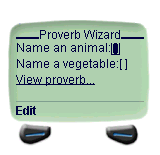
Figure 11.1
11.9 Events
WML allows you to specify automatic actions in a client device that are precipitated by particular 'events'. An 'event' must be associated with a particular element in a WML file - either card, wml or option. The response to an event is defined by the onevent element, which must occur within the element to which it relates. The type of event to respond to is indicated in the type attribute of the onevent element.
Possible values for the type attribute are as shown in Figure 11.2.
The action undertaken by the client device in response to an event must be defined by one of the task elements go, prev, noop or refresh. The task element must be situated within the onevent element.
For example:
<card> <onevent type="onenterbackward"> <go href="backwardpeople.wml"/> </onevent> You didn't enter this card backwards. </card>
If a user arrives at this card via a hyperlink or a go task, they will see the message
You didn't enter this card backwards.
However, if the user arrives at the card via a prev task, they will be redirected to the file backwardpeople.wml.
There is another way of handling an event that is shorter, but less flexible. Instead of using the onevent element, you can specify an action in the form of an attribute in the relevant card or wml element. For example, the sample WML above could be rewritten as follows, and would do exactly the same thing:
<card onenterbackward="backwardpeople.wml">
You didn't enter this card backwards.
</card>
Note that the only kind of action possible using this method is a jump to a URL (in this case, backwardpeople.wml). This is equivalent to the go action. If you want to perform a prev, a noop or a refresh action, you have to use the longer method.
Table 11-1. Figure 11.2: WML event types
| <onevent type=> attribute value | Occurs within element(s)... | Function |
|---|---|---|
| "ontimer" | card, wml | Executes the specified action when a timer expires. Timers are specified using the timer element. |
| "onenterforward" | card, wml | Executes the specified action when the user arrives at the current card or deck via a hyperlink, a go task or any other method that involves moving forwards in the client microbrowser's history stack. |
| "onenterbackward" | card, wml | Executes the specified action when the user arrives at the current card or deck via a prev task, or any other method that involves moving backwards in the client microbrowser's history stack. |
| "onclick" | option | Executes the specified action when the user selects or deselects an option. |
11.10 Templates
Suppose you create a WML deck consisting of five cards, and you want a prev task on every card except the first. Rather than repeating the same do statement in each of the four cards - which is laborious for you as a WML author, and uses up precious bytes in the WML file - you can use the template element to specify a task to appear automatically on every card you want.
Here is an example of a WML file that uses a template element:
<?xml version="1.0"?>
<!DOCTYPE wml PUBLIC "-//WAPFORUM//DTD WML 1.1//EN"
"http://www.wapforum.org/DTD/wml_1.1.xml">
<wml>
<template>
<do type="prev">
<prev/>
</do>
</template>
<card id="card1">
<do type="prev">
<noop/>
</do>
Love speaks, even when the lips are closed.
<br/>
<a href="#card2">
Next proverb...
</a>
</card>
<card id="card2">
It is an ill dog that deserves not a crust.
<br/>
<a href="#card3">
Next proverb...
</a>
</card>
<card id="card3">
He who wants a mule without fault, must walk on foot.
<br/>
<a href="#card4">
Next proverb...
</a>
</card>
<card id="card4">
Never cast a clout till May be out.
<br/>
<a href="#card5">
Next proverb...
</a>
</card>
<card id="card5">
Scabby donkeys scent each other over nine hills.
<br/>
</card>
</wml>
When this file is viewed on a WAP microbrowser, every card except the first one has a 'Back' link on it - even though, in the WML source, none of them contains a prev task. The explanation for this is that the prev task is held in the template element at the beginning of the file, and is applied automatically to every card in the deck, except the first.
The reason there is no 'Back' link on the first card is that the first card contains a noop task. Because a task defined in a card always overrides a default task of the same type as specified in the template, and because noop does nothing, this card displays nothing in place of a 'Back' link.
11.11 Variables
One of the most interesting features of WML is its ability to process variables. If you have any programming experience, you will know that a variable is a 'label' for a numeric value or a string of characters in a computer program. A common use of variables is to store input from a user or another external source - in other words, information that can't be written into the program itself.
Variables in WML enable you to implement interactive features into your cards and decks without getting involved in the complexities of scripting languages like WMLScript. Note that the only variables allowed in WML are strings.
There are a number of ways in which you can specify variables. One of the most useful is via the input element, which allows the user to enter information into the client device's interface.
Here is a very simple WML deck that writes a 'proverb' based on terms the user enters through the input element:
<?xml version="1.0"?>
<!DOCTYPE wml PUBLIC "-//WAPFORUM//DTD WML 1.1//EN"
"http://www.wapforum.org/DTD/wml_1.1.xml">
<wml>
<card id="card1" title="Proverb Wizard">
Name an animal:
<input name="animal"/>
Name a vegetable:
<input name="vegetable"/>
<a href="#card2">
View proverb...
</a>
</card>
<card id="card2" title="Your proverb">
<do type="accept" label="Another?">
<go href="#card1"/>
</do>
A small $(animal) may eat a large $(vegetable).
</card>
</wml>
When this file is opened on a microbrowser, the following card will be displayed:

Figure 11.3
As can be seen, there are two input fields. These are created by the tags <input name="animal"/> and <input name="vegetable"/> in the WML source. The name attributes tell the browser to create the variables animal and vegetable respectively, based on what the user types into each field.
To select a horse for the animal and a radish for the vegetable, enter horse into the first field and radish into the second field. (The actual mechanism for entering text will depend on your microbrowser. For example, it may present you with an Edit option that you activate by pressing one of the phone's navigation buttons.)
The microbrowser display will now be as in Figure 11.4.
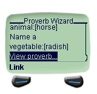
Figure 11.4
Now, activate the 'View proverb...' link. A new card is loaded, showing a proverb based on the terms you entered in the first card (see Figure 11.5).
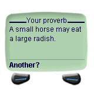
Figure 11.5
In the source WML you can see how the terms entered in the first card were passed to the second card. The variables animal and vegetable were set in the tags <input name="animal"/> and <input name="vegetable"/>.
The source text in the second card looks like this:
A small $(animal) may eat a large $(vegetable).
When the browser encounters a dollar symbol $, it knows that what follows in parentheses is a variable. So instead of displaying '(animal)' it looks for the variable called animal and displays its value - in this example, the string 'horse'. It does the same with the variable vegetable, substituting its name with 'radish'.
(If you want to display a dollar symbol on the screen, use two dollar symbols $$ in your WML file.)
11.12 Timers
You can incorporate a timer into a WML card or deck using the timer element. When a timer runs out, an action is performed as specified in the ontimer event handler. See Section 11.9 for more details about event handling.
timer takes a value attribute, specifying how long the timer should run for. The value is expressed in tenths of a second.
Here is an example timer implementation:
<?xml version="1.0"?>
<!DOCTYPE wml PUBLIC "-//WAPFORUM//DTD WML 1.1//EN"
"http://www.wapforum.org/DTD/wml_1.1.xml">
<wml>
<card id="wait">
<onevent type="ontimer">
<go href="#thankyou"/>
</onevent>
<timer value="40"/>
<p>
Please wait.
</p>
</card>
<card id="thankyou">
<p>
Thank you for waiting.
</p>
</card>
</wml>
When you first load this file you will see the message 'Please wait.' After about four seconds, the first card will time out and the second card will appear, showing the message 'Thank you for waiting.'
11.13 Images
WML can include embedded images. These must be in two-colour wireless bitmap (WBMP) format. There are several free WBMP editors that can be downloaded from the World Wide Web.
To embed an image in a file, use the img element with some or all of the attributes shown in Figure 11.6. For example:
<img src="3glab.wbmp" alt="3G Lab Logo" align="middle"/>
Table 11-2. Figure 11.6: Image attributes
| Attribute (* = required) | Function |
|---|---|
| src *� | Specifies the URL of the source file for the image. |
| alt *� | Specifies text for the browser to display if the image cannot be displayed. |
| localsrc | Specifies a local source for the image. |
| vspace | Specifies the amount of blank space to appear above and below the image in the microbrowser display. |
| hspace | Specifies the amount of blank space to appear to the left and the right of the image in the microbrowser display. |
| align | Specifies the vertical alignment of the image in relation to the surrounding text. Must have the value "top", "middle" or "bottom". To change the horizontal alignment of an image, enclose it in an appropriately formatted paragraph. For example:
<p align="center">
<img src="image.wbmp"
alt="An image"/>
</p>
|
| height,width | Specify the height and width of the image in pixels. This allows the browser to reserve space for it while it loads therest of the card. If these attributes are omitted, the image is displayed at its actual size, though the microbrowser will probably not reserve space for it while the card is loading. If the height and width attributes do not match the actual height and width of an image, the microbrowser either scales the image to match the attributes, or else ignores the attributes and shows the image at its actual size. |
Chapter 12. 12 Example WAP Sites
Included on the Alligata Server CD-ROM are five example WAP sites. If you installed the example sites along with the Alligata Server (see Sections 4 and 5), and you have an HTTP server such as Apache running on your computer, you can view them from a WAP phone or a WAP phone emulator.
The example sites are illustrations of the kinds of service you can implement using WAP. You can create simple sites using just WML, or you can incorporate dynamic features into them using scripting languages like Perl and PHP. The most important thing to remember is to keep the files you serve as small and simple as possible. A compiled WML file should not be larger than 1400 bytes, which means the size of your source WML file should not exceed about 3000 characters.
To view the example WAP sites:
If you have not already done so, install the Alligata Server as described in Sections 4 and 5. If you are installing from a graphical user interface, select 'Alligata Server example sites' in the main installation dialog box. If you are installing from the command prompt, enter Y when you are asked, 'Install Alligata Server examples?'.
Start the Bearer Box and the WAP Box using any of the methods described in Section 8.1.
Start the Web server. For example, to start Apache:
Linux users: . Type /etc/rc.d/init.d/httpd start at the command prompt, and press ENTER.
Solaris users: . Type /etc/init.d/apache start at the command prompt, and press ENTER.
Configure your WAP client device to use your installation of the Alligata Server as its WAP gateway. An example configuration is shown in Figure 12.1.
Table 12-1. Figure 12.1: Example WAP phone configuration
Home URL: http://www.mysite.net Service name: Alligata IP address: 10.0.0.1 Dial-up phone number: 0999123456 Bearer type: data Call type: analogue Connection type: cont PPP security: off Authentication mode: normal Login: foo Password: bar The login and password settings are those of your Point-to-Point Protocol (PPP) server.
On your WAP client device, navigate to the URL of the example sites index. By default this will be the URL of your Web server, followed by /wml/; for example, http://acomputer.asite.net/wml/.
The card in Figure 12.2 is displayed.
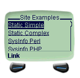
Figure 12.2: Site Examples index
From this card, you can navigate to any of the example sites by selecting the relevant hyperlink. The example sites are described in Sections 12.1 to 12.5.
12.1 Example Site 1: Static WML (Simple)
The simplest kind of WAP site consists of a set of static WML decks or cards. You can find examples of this kind of site by selecting 'Static Simple' or 'Static Complex' from the Site Examples index.
The 'Static Simple' is discussed in Section 11.1. It is a single WML card that displays the message, 'This is static WML text.'
12.2 Example Site 2: Static WML (Complex)
If you select 'Static Complex' from the Site Examples index page, you will be presented with the logo shown in Figure 12.3.
Figure 12.3
After a few seconds the logo will disappear, to be replaced by a set of links (see Figure 12.4).
Figure 12.4
If you follow a link, you will be taken to the corresponding piece of information. You can also use the link 'ACME home' to take you back to the home deck. (Since this is a prev task, it may simply be labelled 'Back' on your device's display - see Section 11.8.)
If you select 'ACME Vacancies', the card in Figure 12.5 will appear on your screen.
Figure 12.5
If you select a link from this card, you will be taken to information about the relevant post. For example, 'Head of Marketing' will show you the card in Figure 12.6.
Figure 12.6
From here you can use the 'ACME Vacancies' link to return to the list of jobs. (Again, this a prev task, so your device may just label it 'Back'.) To go right back to the home deck, keep navigating backwards in the same way.
From the home deck, you can navigate through any series of cards in the way just described.
The first file that the microbrowser loaded when it visited the site Static Complex is called index.wml. Its source is as follows:
<?xml version="1.0"?>
<!DOCTYPE wml PUBLIC "-//WAPFORUM//DTD WML 1.1//EN"
"http://www.wapforum.org/DTD/wml_1.1.xml">
<wml>
<card id="logo" ontimer="#menu" title="Welcome to ACME" newcontext="true">
<timer value="30"/>
<img alt="ACME corp" src="acmelogo.wbmp" align="middle"/>
</card>
<card id="menu" name="menu" title="the ACME menu">
<do type="prev" label="ACME home">
<prev/>
</do>
<a href="info.wml">
What is ACME?
</a>
<br/>
<a href="contact.wml">
Contacting ACME
</a>
<br/>
<a href="employ.wml">
ACME Vacancies
</a>
<br/>
<a href="wpaper.wml">
ACME White Paper
</a>
</card>
</wml>
Remember that your microbrowser does not see this data but a compressed version of it that is less easy for a human being to decipher, but quicker to transmit and using less of the client device's limited memory.
The first two tags in the file are the XML validation tags:
<?xml version="1.0"?>
<!DOCTYPE wml PUBLIC "-//WAPFORUM//DTD WML 1.1//EN"
"http://www.wapforum.org/DTD/wml_1.1.xml">
As we saw earlier, every WML file needs to start with these tags, which specify which versions of XML and WML the file conforms to (see Section 11.4).
Next comes the deck-level <wml> tag. Following that is the first card in the deck:
<card id="logo" ontimer="#menu" title="Welcome to ACME" newcontext="true"> <timer value="30"/> <img alt="ACME corp" src="acmelogo.wbmp" align="middle"/> </card>
This is the card containing the ACME logo. Because it is the first card in the deck, it is the one that appears by default when you load the file.
Here is a description of the card item by item.
First, you will see that the card element contains four attributes:
id="logo" gives the card a name by which other cards or decks can refer to it.
ontimer="#menu" tells the microbrowser that when the timer contained in the card runs out, it should load the card menu. The timer is defined in the timer element.
title="Welcome to ACME" defines a title to appear at the top of the card in the microbrowser.
newcontext="true" instructs the microbrowser to reset its 'context' when the card is loaded. A microbrowser's context consists of information it holds in its memory about recent events. Specifically, newcontext="true" removes all WML variables, clears the microbrowser's navigation history, and resets other information in the microbrower to its default value. precisely what information this is depends on the microbrowser.
The next element is timer. It has the attribute value="30", which tells the microbrowser to wait about three seconds before performing the action specified in the card's ontimer attribute.
Note that, because timer is an empty element - that is, one without a closing tag - its tag must end in a forward slash /.
The remaining element in the card is img, with three attributes:
alt="ACME corp" tells the microbrowser to display the text 'ACME corp' if it cannot load the image for any reason.
src="acmelogo.wbmp" tells the microbrowser that the image to be displayed is the file acmelogo.wbmp.
align="middle" tells the microbrowser to centre the image vertically, in relation to the surrounding text.
img, like timer, is an empty element, so the tag needs a forward slash / at the end of it.
Finally, the card ends with a </card> tag.
The second card in the deck looks like this:
<card id="menu" name="menu" title="The ACME Menu"> <do type="prev" label="ACME home"> <prev/> </do> <a href="info.wml"> What is ACME? </a> <br/> <a href="contact.wml"> Contacting ACME </a> <br/> <a href="employ.wml"> ACME Vacancies </a> <br/> <a href="wpaper.wml"> ACME White Paper </a> </card>
This is the menu that appeared when the ACME logo card timed out. As you can see, it is a list of hyperlinks to other WML files, with each hyperlink being defined by its own a element. Note that the card begins with a do element, which implements a prev link to allow navigation back to the previous card.
We selected the hyperlink 'ACME Vacancies' from this menu. As you can see from the source WML, that link goes to the file employ.wml, which looks like this:
<?xml version="1.0"?>
<!DOCTYPE wml PUBLIC "-//WAPFORUM//DTD WML 1.1//EN"
"http://www.wapforum.org/DTD/wml_1.1.xml">
<wml>
<card id="employ" title="Vacancies">
<do type="prev" label="ACME home">
<prev/>
</do>
<a href="#job1">
Systems Analyst
</a>
<br/>
<a href="#job2">
Head of Marketing
</a>
<br/>
<a href="#job3">
Chief of Admin
</a>
<br/>
<a href="contact.wml">
-=Contact ACME=-
</a>
</card>
<card id="job1" title="Job: Systems Analyst">
<do type="prev" label="ACME Vacancies">
<prev/>
</do>
<p>
A position has opened for a Systems Analyst.
Please send us your CV if you think you are
suitably skilled in Systems Analysis.
</p>
</card>
<card id="job2" title="Job: Marketing Head">
<do type="prev" label="ACME Vacancies">
<prev/>
</do>
<p>
ACME is looking for a new head of Marketing:
someone who is living in Tibet, or can move
there at short notice, with a 3rd tier
university degree and at least five years'
experience in a marketing environment.
Must be a people person.
</p>
</card>
<card id="job3" title="Job: Chief Admin">
<do type="prev" label="ACME Vacancies">
<prev/>
</do>
<p>
ACME is looking for a new chief of administration.
If you are a talented manager with a head for
figures, an eye for detail and a gift for
coercion, we would like to hear from you.
</p>
</card>
</wml>
All the features of this file are described elsewhere in this guide. It is a deck of four cards, with the first card presenting hyperlinks to the other three. In the earlier example the link 'Head of Marketing' was chosen, which goes to the card job2.
Note that, once again, every card in the deck has a <prev/> link to return to the previous card.
12.3 Example Site 3: Perl System Resource Monitor
A WAP site does not need to consist just of static WML files: it can also contain scripts that generate WML decks on the fly. To generate WML dynamically, you can use any of the same scripting languages that are available to generate HTML pages on the World Wide Web. All you have to remember is to make your output as concise as possible (less than 3000 characters) and that it needs to be valid WML.
One language already widely used for Web scripting is the Practical Extraction and Report Language (Perl). Perl's powerful text processing capabilities make it equally suitable for WAP scripting.
You call a WAP script from a mobile device exactly as you would call a Web script from a desktop computer: the relevant URL just has to point to the script file rather than a WML deck. For example, http://www.awapsite.net/anyscript.pl could execute the Perl script anyscript.pl on the WAP site http://www.awapsite.net/. (Of course, the script's output needs to be in WML, in order to display on a WAP microbrowser.)
To download Perl and to find out more about it, visit www.perl.com. Many books are also available on Perl programming.
The Alligata Server's example Perl site retrieves system information from its host machine and sends it in WML format to the client device. Because the information is retrieved using Linux/UNIX commands, the Perl script must be running on a Linux or UNIX operating system.
To view the Alligata Server example Perl site, select 'Sysinfo Perl' from the Site Examples index. You will see the card in Figure 12.7.
Figure 12.7
From top to bottom, this information is as follows:
| Linux-2.2.16 | Operating system |
| 19 users | Number of logins since the system was started up |
| Up: 11 Days 7h54m | Time the system has been running |
| CPU: 24% AVG: 1.18 | Current CPU load and load average |
| RAM: 98% | Amount of RAM used |
| SWP: 8% | Amount of swap space used |
The first item in the list is a hyperlink that takes you to a card showing the names of the users currently logged in to the server machine (see Figure 12.8).
Figure 12.8
The WML generated by the Perl script for this file is as follows:
<?xml version="1.0"?>
<!DOCTYPE wml PUBLIC "-//WAPFORUM//DTD WML 1.1//EN"
"http://www.wapforum.org/DTD/wml_1.1.xml">
<wml>
<template>
<do type="prev" name="back" label="Back">
<prev/>
</do>
</template>
<card id="main" title="apc.acompany.net" newcontext="true">
<p>
<a href="#users">
Linux-2.2.16 19 users
</a>
</p>
<p>
Up: 11 Days 7h54m
</p>
<p>
CPU: 24% AVG: 1.18
</p>
<p>
RAM: 98% SWP: 8%
</p>
</card>
<card id="users" title="users logged in">
<p>
atrull fturton ymuller
</p>
</card>
</wml>
12.412.4 Example Site 4: PHP System Resource Monitor
PHP is a server-side embedded scripting language optimised for use on the World Wide Web. Like Perl, it can be made to generate dynamic output in WML as easily as in HTML. Again, the important thing to remember is that a dynamically generated WML file, like a static WML file, must be less than about 3000 bytes long before compression.
PHP is an open source programming language. You can learn about it at the PHP Web site at www.php.net. This site includes a complete online PHP manual, a Quick Reference Guide and a Frequently Asked Questions page.
The Alligata Server package includes two example PHP sites. The first retrieves system information from its host machine's operating system using the uptime and free Linux/UNIX commands and the PHP fsockopen function.
To view the PHP System Resource Monitor, select the link 'Sysinfo PHP' from the Site Examples index.
You will see the site's main index card (see Figure 12.9).
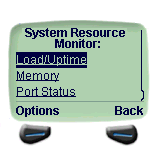
Figure 12.9
Follow any of the three links, 'Load/Uptime', 'Memory' or 'Port Status', to display the relevant card. Example cards are shown below. For ease of legibility, the content of these cards is shown in full, rather than on a microbrowser screen. The information in the 'Load/Uptime' card is explained in the right column; the information in the 'Memory' and the 'Port Status' cards is self-explanatory.
Load/Uptime -- time: 2:40pm The time according to the system's clock up: 8 d 1:56 The amount of time the system has been running users: 7 The number of logins since the system was started up load (1): 2.91 The system's average load over the last minute load (5): 2.53 The system's average load over the last 5 minutes load (15): 2.08 The system's average load over the last 15 minutes Memory -- total: 192704 used: 189652 free: 3052 shared: 117292 buffers: 30056 cached: 28444 Port Status -- 21: open 22: open 23: open 53: closed 80: open
The PHP-generated information is all held in a single WML deck:
<?xml version="1.0"?>
<!DOCTYPE wml PUBLIC "-//WAPFORUM//DTD WML 1.1//EN"
"http://www.wapforum.org/DTD/wml_1.1.xml">
<wml>
<head>
<meta http-equiv="Cache-Control" content="max-age=0" forua="true"/>
</head>
<template>
<do type="accept">
<go href="#"/>
</do>
<do type="prev" name="back" label="Back">
<prev/>
</do>
</template>
<card id="init" newcontext="true">
<p align="center">
<b>System Resource Monitor:</b>
</p>
<p>
<a href="#up">Load/Uptime</a>
<br/>
<a href="#mem">Memory</a>
<br/>
<a href="#ports">Port Status</a>
<br/>
</p>
</card>
<card id="up">
<p align="center">
<b>Load/Uptime</b>
<br/>
--
</p>
<p align="left">
time: 12:29pm
<br/>
up: 8 d 1:56
<br/>
users: 7
<br/>
load (1): 2.91
<br/>
load (5): 2.53
<br/>
load (15): 2.08
<br/>
</p>
</card>
<card id="mem">
<p align="center">
<b>Memory</b>
<br/>
--
</p>
<p align="left">
total: 192704
<br/>
used: 189652
<br/>
free: 3052
<br/>
shared: 117292
<br/>
buffers: 30056
<br/>
cached: 28444
<br/>
</p>
</card>
<card id="ports">
<p align="center">
<b>Port Status</b>
<br/>
--
</p>
<p align="left">
21: open
<br/>
22: open
<br/>
23: open
<br/>
53: closed
<br/>
80: open
<br/>
</p>
</card>
</wml>
12.5 Example Site 5: 'PAT' PHP Mail
The Alligata Server's second example PHP site, 'PAT', enables you to read your e-mail from a WAP client device. It uses PHP's IMAP functions to retrieve messages from your e-mail server, embeds them in WML, and sends them to your mobile device. Despite their name, IMAP functions in PHP can be used with protocols other than IMAP, namely POP3, NNTP and local mailbox access methods.
Before PAT will work on your system, you need to make one edit to the file index.wml in the directory /home/httpd/alligata/wml/dynamic/complex/pat/ (Linux) or /opt/TGLBallex/alligata/wml/dynamic/complex/pat/ (Solaris). In the <go/> tag, insert the name of your e-mail server after server=. For example, if your e-mail server is imap.asite.net, the tag should be as follows:
<go href="view.php3?username=$username&password=$passwo rd&server=imap.asite.net"/>
To view the PAT mail site, select the link 'PAT: PHP mail' from the Site Examples index. You will see a login card:
Figure 12.10
This card is from the file index.wml. Enter your e-mail user name and password and you will be taken to the top of your e-mail inbox:
Figure 12.11
The inbox shows each message's number in the list and its subject. Owing to the size limitations of WML files, the inbox is divided into segments of five messages. To view the next five messages in the inbox, follow the hyperlink 'NEXT 5' at the bottom of the card.
To view a message, select the hyperlinked number preceding it. The message is prefixed by details of the subject, the send date and time, and the sender:
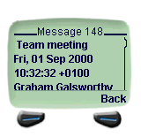
Figure 12.12
Figure 12.13
Where a message is longer than 700 characters, it is split into several smaller messages.
PAT is composed of several files. These are summarised in Figure 12.14.
Table 12-2. Figure 12.14: Summary of PAT files
| File | Function |
|---|---|
| Main files: | |
| index.wml | Contains the login card. Receives the user name and password from the user and invokes view.php3. |
| view.php3 | Invokes lib/mailbox.php3 to display the mailbox. |
| message.php3 | Invokes lib/mailmessage.php3 to display a message. |
| Library files: | |
| lib/mailbox.php3 | Sets up the class mailbox, which defines the contents of a mailbox. |
| lib/mailmessage.php3 | Sets up the class mailMessage, which defines the contents of a message. |
| lib/mesgretrieve.php3 | Prepares messages for WML display. |
| lib/wmlheader.php3 | Defines a header for a WML file. |
| lib/escaper.php3 | Converts escape characters. |
Chapter 13. 13 SMS Messaging
The Alligata Server enables you to use SMS in three ways:
To implement dynamic services such as retrieval of information from Web pages, in response to keywords contained in incoming SMS messages from mobile phones.
To send SMS messages to mobile phones from a personal computer, using HTTP commands.
To configure WAP phones to use a particular WAP service from a computer workstation.
Before you can set up SMS keyword services or send SMS messages from a computer, you need to create an SMS Box group and an SMSC group in the configuration file (see Section 9). You must also have a subscription to an SMSC or a connection to a GSM modem, as explained in Section 9.3.2. Some example settings are shown in Figure 13.1.
Figure 13.1: Example SMS Box and SMSC group configuration settings
group = smsbox bearerbox-host = localhost sendsms-port = 13013 global-sender = 123 log-file = /alligata/admin/smsbox.log log-level = 0 group = smsc smsc = at modemtype = wavecom device = /dev/ttyS2
13.1 Implementing SMS Keyword Services
Once you have configured an SMS Box group and an SMSC group in the configuration file, you need to create an SMS Service group for each service you want to implement. An example SMS Service group is shown in Figure 13.2. (See Section 9.3.3 for explanations of the configuration variables.)
Figure 13.2: Example SMS Service group configuration settings
group = sms-service keyword = proverb aliases = Proverb;PROVERB;potd;Potd;POTD url = http://www.awebsite.net/potd.html prefix = <!--beginprov--> suffix = <!--endprov--> split-chars = ;:. split-suffix = -cont- header = "Today's proverb -- " max-messages = 10
This group sets up an SMS service that returns a proverb from the Web page http://www.awebsite.net/potd.html when it receives the message 'proverb' from a mobile device. From the Web page, it retrieves everything between (but not including) the strings <!--beginprov--> and <!--endprov-->. The content of potd.html could look like this:
<html>
<head>
<title>SMS proverb of the day</title>
</head>
<body bgcolor="#FFFFFF" text="#000000">
<!--beginprov-->
A cat in gloves catches no mice.
<!--endprov-->
</body>
</html>
In this case, a user sending the message 'proverb' to the Alligata Server would receive the reply message
Today's proverb -- A cat in gloves catches no mice.
The Alligata Server does not require the prefix and suffix of the message to be in comments <!--...-->, but bear in mind that if they are not, they will be visible in the Web page if it is viewed from a desktop browser.
The maximum length of an SMS message is usually 140 or 160 characters (depending on whether it is in 7-bit or 8-bit format). If the text retrieved by the Alligata Server is longer than this limit, the Alligata Server splits it into several messages. To do this, it uses the variables split-chars and split-suffix. The message is split at an occurrence of one of the characters specified in split-chars, and all sections of the message except the last have the text specified in split-suffix appended to them. The Alligata Server splits the message at the nearest previous occurrence of a split character to the maximum message length. For example, suppose the proverb in potd.html is a particularly long one:
<html>
<head>
<title>SMS proverb of the day</title>
</head>
<body bgcolor="#FFFFFF" text="#000000">
<!--beginprov-->
Monday's child is fair of
face, Tuesday's child is
full of grace; Wednesday's
child is full of woe,
Thursday's child has far
to go; Friday's child is
loving and giving, Saturday's
child works hard for its living;
and the child that is born on the
Sabbath day, is fair and wise and
good and gay.
<!--endprov-->
</body>
</html>
In this instance, the message needs to be split, and the user will probably receive it in three smaller messages:
| Message 1: | Today's proverb -- Monday's child is fair of face, Tuesday's child is full of grace; Wednesday's child is full of woe, Thursday's child has far to go; -cont.- |
| Message 2: | Today's proverb -- Friday's child is loving and giving, Saturday's child works hard for its living; -cont.- |
| Message 3: | Today's proverb -- and the child that is born on the Sabbath day, is fair and wise and good and gay. |
The string -cont.- in the first and second messages indicates that they are part of a longer message, more of which is to follow. It is specified using the split-suffix configuration variable.
Note that the incoming SMS message must only contain the keyword, unless the SMS service allows parameters after it. Parameters are discussed in Section 13.1.1.
13.1.1 SMS Service Parameters
The configuration variables url, file and text can include parameters that the Alligata Server substitutes with terms from the incoming message. Each parameter is indicated by a percent character % followed by a letter. The parameters you can use are listed in full in Section 9.3.3.
Parameter values should be included in incoming messages after the service keyword, using the following syntax:
keyword parameter#1 parameter#2, etc.
As an example, suppose your company has created a CGI server application that returns an employee's salary. You want the Personnel department to be able to gain access to this information from their SMS phones, but no one else. In this case, you could configure the SMS Service group shown in Figure 13.3.
Figure 13.3: Example SMS Service group for a salary retrieval application
keyword = salary aliases = Salary;SALARY url = http://intranet.awebsite.net/cgi/salary?user=%s&password=%s&employee=%r header = "Salary info -- "
When the Alligata Server receives an SMS message starting with the keyword 'salary' (or one of its aliases), it replaces the first %s in url with the next word in the message after the keyword; replaces the second %s with the next word after that; and replaces the %r with the rest of the message.
For example, if the CGI account has the user name personnel and the password STARfruit, then a Personnel member can access the salary details of the employee Emma Thompson by sending the Alligata Server the following SMS message:
salary personnel STARfruit emma thompson
Upon receiving this message, the Alligata Server sends the following HTTP GET request:
http://intranet.awebsite.net/cgi/salary?user=personnel& password=STARfruit&employee=emma+thompson
When the HTTP reply arrives, the Alligata Server converts it into an SMS message or messages, and sends it back to the Personnel member's mobile phone.
13.2 Sending SMS Messages Using HTTP
For every user you want to be able to send SMS messages using HTTP, you need to define a Send SMS User group in the configuration file. An example Send SMS User group is shown in Figure 13.4.
Figure 13.4: Example Send SMS User group
group = sendsms-user username = colin password = AVOcado user-allow-ip = 10.0.0.5 max-messages = 10 split-chars = .;, split-suffix = -cont.- header = "Msg from Colin -- "
This configuration group allows the user colin with the password AVOcado to send SMS messages from the IP address 10.0.0.5. As with SMS keyword services, outgoing messages that are over the maximum length of a single SMS message can be split into several smaller messages, up to the maximum specified in max-messages. The variables split-chars, split-suffix and header work exactly as in SMS Service groups (see Section 13.1).
http://hostname:port/cgi-bin/sendsms? username=username& password=password& from=sender's_number& to=receiver's_number& text=message_text
The elements in bold italic type should be replaced with the relevant information. For example:
http://localhost:13013/cgi-bin/sendsms?username=colin& password=AVOcado&from=0999666666&to=0898999999&text= All+sales+staff+return+to+office+immediately
The URL should contain no carriage returns and no spaces. Spaces in the message should be represented by plus signs +.
13.2.1 User Data Headers (udh parameter)
An SMS message can include a user data header (UDH) that contains non-textual information for use by a mobile phone. For example, a UDH can tell a phone to handle the main body of the message in a particular way, such as storing it as a ring tone or as a graphical image to appear when the phone is switched on. For information on the format of UDH messages for a particular phone, consult the phone's documentation or visit the manufacturer's Web site.
When you send an SMS message from a computer workstation using HTTP, you can include a UDH by using the optional udh parameter. For example:
http://localhost:13013/cgi-bin/sendsms?username=colin& password=AVOcado&from=0999666666&to=0898999999&text= %52%62%1a%bb%31%0d%21%84%77%ba%f7%f2&udh=%31%a7%99%f3%80%db
All non-alphanumeric characters in the message text and the UDH value must be in hexadecimal format and preceded by a percent sign %.
13.2.2 smsc Parameter
You can use the optional smsc parameter to force an SMS message to be sent via a particular SMSC. The smsc parameter should have the value set by the smsc-id variable in the relevant SMSC group of the configuration file (see Section 9.3.2). For example:
http://localhost:13013/cgi-bin/sendsms?username=colin& password=AVOcado&from=0999666666&to=0898999999&text= All+sales+staff+return+to+office+immediately&smsc=smsc5
13.2.3 SMS Messaging Using HTML Forms
Typing complex URLs into a browser's 'Location' box can be tedious, and if you expect to be sending a lot of SMS messages, it is worth creating an HTML form for the task. Use the HTTP GET method, and define variables in HTML input objects. Constant values can be embedded in hidden objects. Variable names should be specified in the name attributes of the relevant elements, and the corresponding values in value attributes. For example:
<html>
<head>
<title>SMS Message Sender</title>
</head>
<body bgcolor="#FFFFFF" text="#000000">
<h1>SMS Message Sender</h1>
<form name="sendsms" method="get"
action="http://localhost:13013/cgi-bin/sendsms">
<input type="hidden" name="username" value="tester">
<input type="hidden" name="password" value="foobar">
<input type="hidden" name="from" value="0999666666">
<p>
Telephone number:<br>
<input type="text" size="30" name="to">
</p>
<p>
Message:<br>
<textarea cols="25" rows="5" name="text">
</textarea>
</p>
<p>
User Data Header (optional):<br>
<input type="text" size="30" name="udh">
</p>
<input type="submit" value="Send Message">
<br>
</form>
</body>
</html>
The appearance of this form in a Web browser is shown in Figure 13.5.
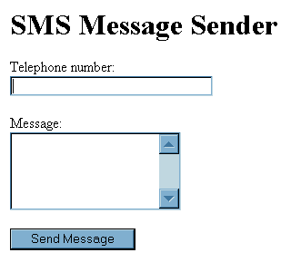
Figure 13.5: Example HTML form for SMS messaging
13.3 Over-the-air (OTA) Configuration of WAP Client Devices Using SMS
Changing the settings for a WAP service provider from a mobile device can be laborious, with up to a dozen variables to alter on each device. If you are a system administrator needing to configure all your company's WAP phones to the same service, the process becomes particularly time-consuming. However, the Alligata Server allows you to automate device configuration by defining automatic WAP service settings in the configuration file. By sending a single SMS-format message to each phone from a computer workstation, you can add a whole configuration to its settings. It is also possible for the user of a client device to invoke the OTA configuration themselves. This enables a user to add WAP services to their mobile phone with a minimum of effort.
The Alligata Server's OTA configuration feature is currently known to work on the Nokia 7110, Nokia 6210 and Nokia 9110i phones.
In order to implement OTA configuration, you need to set up three configuration groups in the configuration file:
an OTA Configuration group, containing the settings to be sent to the client device
a Send SMS User group, setting up a user account for sending of OTA messages
an SMS Service group, pointing to the Alligata Server's sendota CGI application
For details of configuration groups and variables, see Section 9.
An example set of configuration groups for OTA configuration is shown in Figure 13.6.
To configure a WAP client device over the air (system administrator):
Send a message to the Alligata Server via HTTP using the following syntax:
http://hostname:port/cgi-bin/sendota? username=username&password=password&phonenumber=destination_phone_number
For example:
http://localhost:13013/cgi-bin/sendota?username=otauser& password=foo&phonenumber=449999123456
The client device will receive a message containing the appropriate configuration information.
To configure a WAP client device over the air (client): .
Send an SMS message to the Alligata Server's telephone number consisting of the keyword for the OTA configuration service. For example, for the configuration in Figure 13.6:
ota
After a while, you will receive an SMS message from the Alligata Server containing the new settings. How long this message takes to arrive depends on the capabilities and load of your SMSC.
Use the relevant feature of your device to add the configuration settings to your list of WAP providers and, if required, make the new service your default one.
Figure 13.6: Example settings for OTA configuration
group = sms-service keyword = ota # In one line! url = "http://localhost:13013/cgi-bin/sendota? username=otauser&password=GRAPefruit&phonenumber=%p" group = otaconfig location = "http://www.asite.net" service = Company Home ipaddress = 100.100.100.100 phonenumber = 01487772268 bearer = data calltype = analogue connection = cont pppsecurity = off authentication = normal login = phoneuser secret = barfoo group = sendsms-user username = otauser password = GRAPefruit user-deny-ip = "" user-allow-ip = "" max-messages = 2 concatenation = 1
Appendix A. Appendix: Troubleshooting Guide
If you encounter any problems while running the Alligata Server, in the first instance you should check the log files for information. By default, the log files are held in the directory /var/log/alligata. You can view the log files by using the UNIX less command (for example, less /var/log/alligata/bearerbox.log). To watch a log file update while the Alligata Server is running, press SHIFT+F from within less.
| Problem | Possible Cause | Solution |
|---|---|---|
| The Bearer Box will not start. | The configuration file contains errors. | Read Section 9 for information on how to edit the configuration file. Note that when you first install the Alligata Server, it will not be connected to an SMSC or a GSM modem. Therefore, if the configuration file contains any SMS variables, the Alligata Server may not start. |
| The WAP Box will not start. | There are errors in the WAP Box configuration group. | Read Section 9 for information on how to edit the configuration file. |
| The SMS Box will not start. | Your computer is not connected to an SMSC or a GSM modem. | If you are subscribed to an SMSC, check that you are correctly linked to it and that you have configured the SMS Box and SMSC configuration groups properly (see Section 9). If you are using a GSM modem, check that it is correctly connected to the computer and that the SMS Box and SMSC configuration groups are properly configured. |
| There are errors in the SMS Box or SMSC configuration groups. | Read Section 9 for information on how to edit the configuration file. | |
| The Alligata Server example sites cannot be viewed from a WAP client device. | The example sites have not been installed. | Rerun the installation program and install the example sites. (You do not need to reintall the Alligata Server.) See Sections 4 and 5 for installation instructions. |
| There is no HTTP server running on the same computer as the example sites. | Start your Web server and ensure that the example sites are in the correct directory for the server to find them (for example, in Linux, Apache looked by default in the directory /home/httpd. See Section 12 for instructions on viewing the example sites). If you have not installed a Web server, you can install the Apache server by rerunning the Alligata Server installation program and selecting the 'Apache Web server' option. (You do not need to reinstall the whole of the Alligata Server.) See Sections 4 and 5 for installation instructions. | |
| The message '[OK]' was displayed when each Alligata Server box was started, but the Alligata Server is not responding to any WAP or SMS requests. | The Alligata Server may have been forced to close down by an error. | Check the Alligata Server log files for information about whatever caused the program to close down. |
| When the Bearer Box was instructed to start, the message 'Could not connect to the port' was displayed. | The Bearer Box is already running. | At the Linux command prompt, type ps -ef | grep box This will output a list that includes all Alligata Server processes. If any of the processes are named 'bearerbox', then the Bearer Box is already running. |
| Outgoing SMS messages are not being sent by the Bearer Box. | The connection to your SMSC or GSM modem is faulty. | Check the connection to your SMS Centre or GSM modem. Ensure that the SMS Box and SMSC groups in the configuration file are properly set up. |
| An SMS Service group is misconfigured. | Check in the configuration file that the relevant SMS Service group is properly configured. A common problem is that the max-messages variable is set too loiw. If an outgoing message needs splitting into more messages than allowed by max-messages, not all the messages will be sent. | |
| Over-the-air (OTA) SMS configuration messages are not reaching the target mobile phone. | The variable max-messages in the OTA configuration group is set too low in the configuration file. (OTA configuration messages are usually too long to fit in a single SMS message.) | Set the variable max-messages in the OTA configuration group to a value of 2 or higher. |